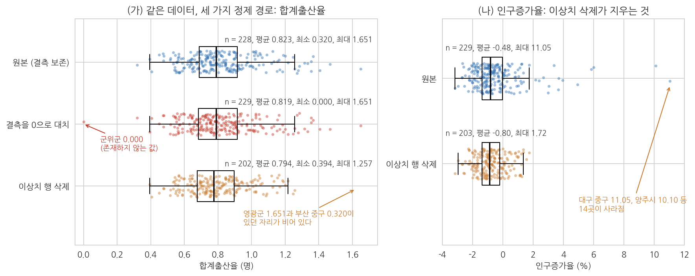
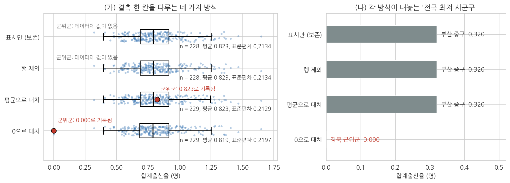

7주차 2회차. 에이전트로 데이터 정제하기
최종 수정: 2026-09-03 · 이 교재는 학기 중에도 계속 업데이트됩니다
이 실습에서 하는 것
1회차에서 결측·이상치·자료형·병합 키의 원리를 배웠다. 이번 실습에서는 그 원리를 실제 데이터 두 개에 적용한다. 2023년 시군구 인구 파일과 2013년 시군구 합계출산율 파일을 진단하고, 열마다 처리 규칙을 표로 정하고, 결측과 이상치를 규칙대로 처리하고, 두 파일을 병합해 "10년 치 출산율 비교"가 가능한 데이터 한 장을 만든다. 이 데이터가 9주차 탐색적 분석의 재료다.
오늘의 진행 순서는 1회차에서 배운 원칙 그대로다. 진단 없이 치료 없고, 처리에는 근거를 남기고, 결과는 표본으로 대조한다. 특히 오늘은 에이전트가 결측과 이상치를 그럴듯하게 망치는 장면을 네 번 일부러 만들어서 관찰한다. 앞의 둘은 헐거운 지시가 부르는 사고(결측을 0으로 채우기, "정리해 줘"가 삭제로 번역되기)이고, 뒤의 둘은 데이터 자체에 숨은 오류가 부르는 사고(숫자 열의 천 단위 쉼표, 병합 키에 붙은 공백 한 칸)다. 2주차의 검증 손잡이 실험이 "묻는 방식"의 실험이었다면, 오늘은 "맡기는 방식"의 실험이다. 그리고 마지막에는 오늘의 대화를 닫고 새 대화에서 정제 결과를 처음부터 다시 계산해 보는 독립 검산까지 한다.
이 실습이 끝나면 다음 산출물이 남는다.
- 정제 전 진단 보고서와 정제 규칙표 (
진단보고서_7주차.md) - 병합·정제된 데이터 (
data/sigungu_tfr_2013_2023.csv, 229행 13열) - 이름 대응표 (
data/대응표_7주차.csv, 9행) - 정제 전후 비교표, 독립 검산 대조표, 데이터 사전 (진단보고서에 절로 추가)
- 무엇을 왜 바꿨는지 기록한 정제 로그 (
정제로그_7주차.md) - (선택 심화) 오늘의 절차를 굳힌 스킬
clean-log
준비물
| 구분 | 내용 |
|---|---|
| 폴더 | 학기 내내 쓰는 공공데이터분석 프로젝트 폴더 (3주차에 uv 환경 구축 완료) |
| 데이터 1 | data/sigungu_2023.csv (2023년 전국 229개 시군구 인구 지표, 출처: 행정안전부 주민등록인구통계·국가데이터처(옛 통계청) 인구동향조사, KOSIS에서 수집) |
| 데이터 2 | data/sigungu_tfr_2013.csv (2013년 시군구 합계출산율, 출처: 국가데이터처 인구동향조사, KOSIS에서 수집) |
| 도구 | VSCode + Claude Code, pandas (3주차 환경) |
| 선수 내용 | 2주차(검증 손잡이를 단 지시 설계, 새 대화 독립 검산, CLAUDE.md), 4주차 2회차(프로파일링), 5주차(참조 파일이 딸린 Skill. 선택 심화에서 사용), 7주차 1회차(정제의 원리) |
| 오늘 만들 폴더 | data/practice (2.9의 오류 심기 실험용. 실습이 끝나면 지운다) |
2.1 정제 전 진단 보고서를 시킨다
무엇을 왜 하는가. 정제의 첫 단계는 손대는 것이 아니라 파악하는 것이다. 4주차의 프로파일링을 한 단계 확장해서, 이번에는 "정제를 위한" 진단을 시킨다. 차이는 목적에 있다. 4주차에는 데이터가 무엇인지 알기 위해 보았다면, 오늘은 무엇을 고쳐야 하는지 목록을 만들기 위해 본다. 파일이 두 개이므로 병합 가능성 진단(두 파일의 시군구 이름이 서로 맞는지)까지 요구하는 것이 핵심이다.
"data 폴더의 sigungu_2023.csv와 sigungu_tfr_2013.csv를 pandas로 읽고, 정제 전 진단 보고서를 '진단보고서_7주차.md'로 만들어 줘. 파일마다 (1) 행 수와 열 수, (2) 열별 자료형, (3) 결측값의 개수와 정확한 위치(어느 시군구의 어느 열인지), (4) 숫자 열의 최소·최대값과 상식에 어긋나는 값 후보를 정리해 줘. 마지막으로 (5) 두 파일을 (시도, 시군구) 기준으로 이어 붙인다고 할 때 한쪽에만 있는 시군구가 있는지 목록으로 보여 줘. 이 단계에서는 데이터를 절대 수정하지 말고 진단만 해 줘."
예상되는 에이전트의 행동과 결과. 에이전트가 두 파일을 읽는 파이썬 코드를 만들어 실행하고(승인 요청이 올 것이다), 보고서 파일을 생성한다. 도구 사용 순서는 대개 파일 읽기, 코드 실행, 파일 쓰기다. 보고서의 자료형 부분에는 다음과 비슷한 출력이 담긴다 (pandas 판에 따라 문자 열이 object로 표시되기도 한다).
시도 str
시군구 str
총인구 float64
면적 float64
...
합계출산율 float64
출생아수 float64
2023년 파일은 229행 12열이고 결측은 2칸(경북 군위군의 합계출산율·출생아수)이다. 2013년 파일은 264행 3열이고 결측이 없다.
결측 부분은 개수만 적혀서는 안 된다. "결측 2건"이라고만 쓰인 보고서는 반쪽이다. 지시문에서 위치를 물었으므로 다음과 같은 표가 따라온다.
[2023년 파일: 결측의 위치]
시도 시군구 합계출산율 출생아수 파일 줄 번호
경북 군위군 NaN NaN 73
결측 합계: 2칸 (전체 2,748칸 중 0.07%)
[2013년 파일: 결측의 위치]
결측 없음 (264행 3열, 792칸 모두 채워짐)
(4)의 숫자 열 범위는 이런 모양으로 나온다. 단위를 모르면 읽을 수 없는 표이므로, 6주차에서 배운 "숫자보다 코드북을 먼저"를 떠올리며 본다.
최소 최대 단위
총인구 8,996 1,190,964 명
면적 3.013 1,820.573 제곱킬로미터
인구밀도 19.196 25,050.385 제곱킬로미터당 명
인구증가율 -3.19 11.05 %
고령인구비율 10.677 45.278 %
합계출산율 0.320 1.651 명
출생아수 26 6,714 명
상식에 어긋나는 값 후보로는 인구증가율 11.05%(대구 중구)나 합계출산율 0.320(부산 중구)을 들 것이다. 눈여겨볼 대목이 하나 더 있다. 총인구·고령·생산가능·유소년·출생아수 다섯 열이 실수형(211381.0처럼 소수점이 붙은 형태)으로 읽혔다는 점이다. 값은 모두 정수인데 파일이 그렇게 저장되어 있을 뿐이다. 이것이 고쳐야 할 자료형 문제인지 아닌지는 2.2의 규칙표에서 판정한다.
그리고 (5)에서 흥미로운 목록이 나온다. 병합 가능성 진단은 다음과 같은 요약으로 받아 두는 것이 좋다.
[병합 가능성 진단: (시도, 시군구) 기준]
양쪽에서 짝을 찾은 시군구 228
2023년 파일에만 있음 1 인천 미추홀구
2013년 파일에만 있음 36 경기 20, 경남 5, 경북 2, 전북 2, 충남 2, 충북 2 (일반구 33)
+ 인천 남구, 세종 세종시, 충북 청원군
(시도, 시군구) 중복 2023년 0건 / 2013년 0건
키 열의 앞뒤 공백 2023년 0건 / 2013년 0건
시도 표기 양쪽 모두 17개, 불일치 없음
마지막 세 줄은 눈으로는 절대 확인할 수 없는 항목이라 특히 중요하다. 키가 중복되면 병합에서 행이 복제되고, 이름 끝에 공백이 한 칸 붙어 있으면 사람 눈에는 같은 이름인데 기계에는 다른 이름이 된다. 이번 두 파일은 다행히 셋 다 깨끗하다. 깨끗하지 않을 때 무슨 일이 벌어지는지는 2.9에서 일부러 오류를 심어 확인한다.
검증. 보고된 결측 위치를 직접 확인한다. VSCode 탐색기에서 sigungu_2023.csv를 클릭해 열고, Ctrl+F로 "군위군"을 찾아 해당 행의 끝부분에 값 두 개가 정말 비어 있는지 본다(쉼표 두 개가 연달아 나오거나 행이 일찍 끝난다). 군위군 행은 파일의 73번째 줄이다. 에이전트가 "인덱스 71"이라고 보고했다면 틀린 것이 아니다. 열 이름 줄이 1번째 줄이고 pandas는 데이터 행을 0부터 세기 때문에 두 칸 차이가 난다. 그리고 "행 수 229"도 대조한다. 파일 맨 아래로 스크롤하면 마지막 행 번호가 230일 것이다(1행은 열 이름이므로 데이터는 229행). 에이전트의 보고서에서 최소 두 항목을 이렇게 원본과 대조하는 습관이 오늘 실습 전체의 바탕이 된다.
에이전트는 친절해서 탈이다. 진단을 시키면 "결측이 있길래 처리해 두었습니다"라며 부탁하지 않은 수정까지 해 버리는 일이 있다. 진단과 치료를 분리하는 것은 의료의 원칙이자 2주차에서 배운 좋은 지시의 원칙(과제의 범위를 명확히)이기도 하다. 지시문 끝의 "절대 수정하지 말고"는 장식이 아니라 안전장치다.
2.2 정제 규칙표 만들기: 열별 규칙을 정해 놓고 그대로만 처리하게 한다
무엇을 왜 하는가. 진단 보고서가 나왔으니 바로 처리에 들어가고 싶어진다. 그러나 1회차의 원칙대로 처리 방법의 선택은 사람의 일이다. 이 선택을 그때그때 대화로 지시하면 "결측 처리해 줘" 같은 헐거운 지시가 섞여 들어가고, 무엇을 지시했는지 나중에 되짚기도 어렵다. 그래서 처리에 앞서 정제 규칙표를 만든다. 진단에서 발견된 문제마다 무엇을 할지, 왜 그런지를 한 행씩 표로 못 박고, 에이전트에게는 "이 표에 없는 처리는 하지 않는다"고 지시한다. 규칙표는 2주차에서 배운 지시 설계의 연장이다. 성공 기준과 범위를 지시문 여기저기에 흩뿌리는 대신 표 하나에 모아 두는 것이다. 표 7-3이 오늘 데이터의 규칙표다. 규칙 칸과 근거 칸은 여러분이 정한 것이고, 사실 칸은 진단 보고서에서 옮겨 온 것이다 (모두 실제 파일에서 확인한 값이다).
표 7-3. 정제 규칙표 (2023년·2013년 시군구 파일)
| 대상 | 진단에서 확인한 사실 | 규칙 | 근거 |
|---|---|---|---|
| 합계출산율·출생아수의 결측 | 각 1칸, 경북 군위군 (2023년 파일 73번째 줄) | 보존한다. 어떤 값으로도 채우지 않는다 | 2023년 7월 대구 편입에 따른 집계 공백. 실측값이 없으므로 대치는 창작이다 |
| 합계출산율의 이상치 | 박스플롯 수염 바깥(0.346 아래 또는 1.257 위) 12곳. 위로 영광군 1.651 등 11곳, 아래로 부산 중구 0.320 | 삭제하지 않는다. 조사 목록에 올린다 | 실제 값일 가능성이 크다. 삭제하면 가장 중요한 사례부터 잃는다 |
| 인구증가율의 이상치 | 수염 바깥(-3.43 아래 또는 2.01 위) 14곳. 대구 중구 11.05%, 양주시 10.10% 등 | 위와 같다. 조사 목록 | 대규모 입주 같은 실제 변화일 수 있다. 확인 전까지 값을 유지한다 |
| 자료형 | 총인구·고령·생산가능·유소년·출생아수가 실수형으로 읽힘. 값은 모두 정수 | 변환하지 않고 기록만 한다 | 문자로 저장된 숫자가 아니므로 계산 결과가 달라지지 않는다. 총인구 합계 51,439,038명은 정수로 바꿔도 같다 |
| 병합 키 | 두 파일 모두 (시도, 시군구) 중복 0건, 앞뒤 공백 0건, 시도 표기 17개 일치 | 키는 (시도, 시군구) 두 열. 이름 수정은 대응표(2.4)에 적힌 것만 | 시군구 이름만 쓰면 중구 6곳, 고성군 2곳이 뒤엉킨다 |
| 원본 파일 | 두 파일 모두 | 어느 단계에서도 수정하지 않는다. 산출물은 새 파일로 저장한다 | 잘못되면 언제든 처음부터 다시 할 수 있어야 한다 |
"진단보고서_7주차.md 아래에 '정제 규칙' 절을 추가해 줘. 내가 정한 규칙표를 그대로 옮기되, '진단에서 확인한 사실' 칸은 보고서의 수치로 채우고 내가 적은 값과 다르면 그 사실을 알려 줘. 규칙은 다음과 같다. (1) 군위군의 합계출산율·출생아수 결측은 보존한다. (2) 합계출산율과 인구증가율의 박스플롯 수염 바깥 값은 삭제하지 않고 조사 목록으로 만든다. (3) 실수형으로 읽힌 다섯 열은 값이 모두 정수인지 확인만 하고 변환하지 않는다. (4) 병합 키는 (시도, 시군구) 두 열이다. (5) 원본 파일은 수정하지 않는다. 표 아래에 '이 표에 없는 처리는 하지 않는다'는 문장을 넣어 줘. 이 단계에서도 데이터는 수정하지 마."
예상되는 에이전트의 행동과 결과. 에이전트가 보고서 파일을 읽고 절을 덧붙인다. 규칙 (2)와 (3)을 확인하느라 짧은 코드를 한 번 더 실행할 것이다. 화면에는 대략 이런 확인 결과가 지나간다.
[규칙 (3) 확인: 실수형으로 읽힌 다섯 열의 값이 모두 정수인가]
총인구 229개 값 모두 정수 (예: 211381.0)
고령 229개 값 모두 정수 (예: 51700.0)
생산가능 229개 값 모두 정수 (예: 137876.0)
유소년 229개 값 모두 정수 (예: 19863.0)
출생아수 228개 값 모두 정수 (군위군 결측 1칸 제외, 예: 826.0)
정수형으로 바꿔도 총인구 합계는 51,439,038명으로 동일
[규칙 (2) 확인: 박스플롯 수염 바깥 값의 개수]
합계출산율 Q1 0.688 Q3 0.915 하한 0.346 상한 1.257 12곳
인구증가율 Q1 -1.390 Q3 -0.030 하한 -3.430 상한 2.010 14곳
두 열에 걸쳐 겹치는 시군구 없음. 합계 26곳
"다섯 열의 값이 모두 정수임을 확인했습니다. 출생아수 열은 군위군 결측 때문에 정수형으로 바꾸려면 결측을 허용하는 정수형이 필요합니다" 같은 설명이 따라오면 좋은 신호다. 규칙표에 없는 사실을 스스로 짚었기 때문이다. 이상치의 사실 칸에는 12곳과 14곳이라는 수가 적힌다. 1회차 그림 7-2에서 본 빨간 점의 개수와 같다. 지시문에서 "내가 적은 값과 다르면 알려 달라"고 했으므로, 만약 여러분이 표에 적은 수와 계산 결과가 다르면 에이전트가 그 사실을 먼저 보고해야 한다. 아무 말 없이 여러분의 숫자를 그대로 옮겨 적었다면 확인을 건너뛴 것이므로 다시 시킨다.
검증. 규칙표의 사실 칸에서 두 수치를 원본과 대조한다. 첫째, 결측 위치. 2023년 파일의 73번째 줄(Ctrl+G를 누르고 73 입력)이 군위군인지 본다. 둘째, 이상치 하나. 124번째 줄이 부산 중구이고 합계출산율 칸이 0.32인지 본다. 그리고 표 아래에 "이 표에 없는 처리는 하지 않는다"는 문장이 실제로 들어갔는지, 원본 CSV 두 개의 수정 시각이 바뀌지 않았는지 확인한다. 규칙표는 이제부터 오늘의 모든 지시가 참조하는 기준 문서다.
2.3 결측·이상치 처리: 지시하고, 근거를 기록하게 한다
실험 1: 에이전트가 결측을 망치는 장면을 직접 본다
무엇을 왜 하는가. 처리를 지시하기 전에, 1회차 유의 박스에서 경고한 장면을 직접 만들어 본다. 목적은 에이전트를 골탕 먹이는 것이 아니라, 잘못된 위임이 어떤 결과를 낳는지 눈으로 확인해 두는 것이다. 에이전트에게 "결측을 0으로 채우는" 처리를 시키고, 그 결과로 순위가 어떻게 뒤집히는지 본다.
"실험을 하나 해 보자. sigungu_2023.csv를 읽어서 합계출산율의 결측값을 0으로 채운 사본을 메모리에서만 만들고(파일 저장은 하지 마), 그 사본 기준으로 합계출산율이 낮은 시군구 5곳을 출력해 줘. 그다음, 결측을 채우지 않은 원본 기준으로도 같은 5곳을 출력해서 두 결과를 비교해 줘. 두 경우의 평균과 중앙값도 함께 보여 줘."
예상되는 에이전트의 행동과 결과. 두 개의 순위표가 나온다 (실제 실행 결과다).
[결측을 0으로 채운 사본] [원본]
경북 군위군 0.000 부산 중구 0.320
부산 중구 0.320 서울 관악구 0.394
서울 관악구 0.394 서울 종로구 0.406
서울 종로구 0.406 서울 광진구 0.449
서울 광진구 0.449 대구 서구 0.474
결측을 0으로 채운 쪽에서는 경북 군위군이 출산율 0.000으로 전국 최저 1위에 오른다. 원본 기준 최저는 부산 중구(0.320)다. 군위군의 출산율은 낮은 것이 아니라 없는 것인데, 0으로 채우는 순간 "전국에서 아이가 가장 안 태어나는 곳"이라는 거짓 사실이 만들어진다. 이 사본이 파일로 저장되어 9주차 분석에 흘러들었다면, 그래프와 보고서까지 오염되었을 것이다. 에이전트는 이 모든 과정에서 한 번도 거짓말을 하지 않았다는 점에 주목하자. 시킨 일을 정확히 했을 뿐이다. 문제는 지시, 곧 위임의 방식에 있었다.
이 실험을 한 걸음 더 밀어 보자. 함께 출력한 평균은 0.823에서 0.819로, 중앙값은 0.790에서 0.789로 움직인다. 소수 셋째 자리에서 겨우 보이는 차이다. 요약통계만 보고서에 실었다면 아무도 눈치채지 못했을 것이다. 결측 대치의 피해는 평균처럼 뭉뚱그린 수치에는 잘 드러나지 않고, 최솟값과 순위처럼 개별 행이 드러나는 자리에서 튀어나온다. 검증할 때 요약통계와 함께 극단값을 꼭 보는 이유다.
검증. 두 순위표에서 군위군의 위치를 확인하고, 관찰한 내용을 한 문장으로 기록해 둔다(2.8의 정제 로그에 "하지 않기로 한 처리"로 남길 것이다).
실험 2: "이상치를 정리해 줘"라고 하면 무슨 일이 생기는가
무엇을 왜 하는가. 두 번째 실험은 규칙표 없이 헐거운 지시를 했을 때 이상치가 어떻게 되는지 보는 것이다. 규칙표를 만든 대화에서는 에이전트가 규칙을 기억하고 있으므로, 새 대화를 열어 규칙표가 없는 상태를 만든다.
"(새 대화에서) data/sigungu_2023.csv에서 이상치를 정리해서 data/sigungu_2023_clean.csv로 저장해 줘."
예상되는 에이전트의 행동과 결과. 에이전트가 틀리는 장면이다. 에이전트는 "이상치"의 기준을 스스로 정한다. 흔한 선택은 박스플롯 규칙(수염 바깥)이고, 대상 열도 스스로 고른다. 숫자 열 전체에 적용하기도 하고 몇 개 열만 고르기도 한다(2주차에서 본 비결정성이다). 합계출산율과 인구증가율 두 열에 이 규칙을 적용한 경우, 수염 바깥에 있는 26개 시군구 행이 통째로 삭제되어 203행짜리 파일이 저장된다 (실제 계산 결과다). 완료 보고는 대개 "이상치 26건을 제거하고 저장했습니다"처럼 명랑하다. 무엇이 사라졌는지는 말하지 않는다.
검증. 저장된 파일을 열어 행 수를 본다. 마지막 줄 번호가 230이 아니라 204 부근이면 25행 이상이 사라진 것이다. Ctrl+F로 "영광군"과 "부산,중구"를 찾아보라. 둘 다 없다. 전국 최고 출산율 지역과 최저 지역이 파일에서 없어졌고, 인구가 가장 빠르게 느는 대구 중구와 양주시도 없다. 저출산과 인구이동을 묻는 분석에서 가장 궁금한 사례 26곳을 잘라 낸 셈이다. 행 수 확인이라는 가장 단순한 검증이 이 사고를 잡는다.
재지시와 수정. 규칙표를 근거로 되돌린다.
"방금 만든 sigungu_2023_clean.csv는 삭제해 줘. 진단보고서_7주차.md의 정제 규칙표를 읽고, 규칙대로 이상치는 삭제하지 말고 '이상치 조사 목록' 표로만 정리해 줘. 무엇을 기준으로 이상치를 골랐는지(열, 규칙, 수염의 상한과 하한)도 표 위에 적어 줘."
에이전트가 파일을 지우고 규칙표를 읽은 뒤 조사 목록을 만든다. 이 목록이 다음의 본 처리에서 그대로 쓰인다. 틀림, 발견, 재지시, 수정의 네 단계를 거치며 확인한 것은 하나다. 에이전트는 "정리"라는 말을 "삭제"로 번역하기 쉽고, 그 번역을 막는 것은 규칙표와 행 수 확인이라는 것이다. 지운 파일이 정말 없어졌는지 탐색기에서 확인하는 것도 잊지 말자. 폴더에 남은 오염된 파일이 몇 주 뒤 분석에 실수로 쓰이는 사고를 막기 위해서다.
본 처리: 근거를 함께 기록하게 한다
무엇을 왜 하는가. 이제 올바른 방식으로 처리를 지시한다. 핵심은 두 가지다. 처리 방법을 에이전트가 아니라 내가 정한다는 것(규칙표), 그리고 모든 처리에 근거를 함께 기록하게 한다는 것이다. 1회차에서 판단한 대로 군위군의 결측은 보존한다. 이상치 후보는 삭제하지 않고 "조사 목록"으로 만든다.
"진단보고서_7주차.md의 정제 규칙표대로 다음을 처리해 줘. (1) 군위군의 합계출산율·출생아수 결측은 채우지 말고 결측 그대로 보존한다. 근거는 '2023년 7월 군위군의 대구 편입으로 인한 집계 공백으로 추정, 실측값이 없으므로 대치 부적절'이라고 기록한다. (2) 합계출산율과 인구증가율에서 박스플롯 기준으로 수염 바깥에 있는 시군구를 찾아서, 삭제하지 말고 '이상치 조사 목록' 표로 만들어 줘. 표에는 열, 시군구, 값, 전국 평균과의 차이, '오류 의심'인지 '실제 값으로 보임'인지에 대한 의견을 넣어 줘. (3) 이 모든 내용을 진단보고서 아래에 '처리 내역' 절로 추가해 줘. 규칙표에 없는 처리는 하지 말고, 원본 CSV 파일은 수정하지 마."
예상되는 에이전트의 행동과 결과. 보고서에 처리 내역 절이 추가된다. 이상치 조사 목록은 26행짜리 표로, 1회차 그림 7-2에서 본 얼굴들이 나타날 것이다. 앞부분은 대략 이런 모양이다 (값은 실제 계산 결과, 의견은 예시다).
| 열 | 시도 | 시군구 | 값 | 전국 평균과의 차이 | 의견 |
| 합계출산율 | 전남 | 영광군 | 1.651 | +0.828 | 실제 값으로 보임 |
| 합계출산율 | 부산 | 중구 | 0.320 | -0.503 | 실제 값으로 보임 |
| 인구증가율 | 대구 | 중구 | 11.05 | +11.53 | 조사 필요 (대규모 입주 가능성) |
| 인구증가율 | 경기 | 양주시 | 10.10 | +10.58 | 조사 필요 |
에이전트가 "실제 값으로 보임"이라는 의견을 붙이더라도 그것은 의견일 뿐이며, 최종 판단(유지·수정·조사)은 여러분의 몫으로 남는다.
검증. 이상치 목록에서 한 곳을 골라 KOSIS나 해당 지자체 홈페이지에서 값을 교차 확인해 본다. 예를 들어 "전남 영광군 2023년 합계출산율"을 검색해 파일의 1.651과 비교한다. 교차 확인이 어렵다면 최소한 데이터 안에서의 정합성이라도 본다. 영광군의 출생아수와 인구 규모가 높은 출산율과 어긋나지 않는지 에이전트에게 계산을 시켜 볼 수 있다. 그리고 원본 파일이 여전히 229행인지 한 번 더 본다. 실험 2를 겪은 뒤라면 이 확인이 왜 필요한지 설명이 필요 없을 것이다.
이상치 기준을 두 가지로 잡아 본다
무엇을 왜 하는가. 방금 만든 조사 목록의 26곳은 어디서 나온 숫자인가. 2.2의 규칙표가 이상치를 "박스플롯 수염 바깥"으로 정의했기 때문이다. 이 기준은 데이터 자신에게서 나온다. 사분위수로 무리의 가운데 절반을 구하고 그 폭의 1.5배 바깥을 이상치라 부르는 것이니, 결국 "이 값이 무리에서 떨어져 있는가"를 묻는 셈이다. 이런 기준을 분포 기준이라 부르자. 그런데 우리가 정말 묻고 싶은 질문은 다른 것일 수 있다. "이 값이 상식적으로 있을 수 있는 값인가." 이 질문에 답하는 기준은 데이터가 아니라 분석 목적에서 온다. 절대 기준이다. 두 기준을 나란히 적용하면 어떤 차이가 나는지 확인해 보자.
"이상치 조사 목록을 두 가지 기준으로 각각 만들어 비교해 줘. (1) 분포 기준: 지금까지 쓴 박스플롯 규칙. (2) 절대 기준: 합계출산율이 0.5 미만이거나 1.3 초과, 인구증가율이 -3% 미만이거나 +5% 초과. 열마다 두 기준의 하한과 상한을 먼저 보여 주고, 각 기준에 걸린 시군구 수, 두 기준 모두에 걸린 곳의 수, 한쪽에만 걸린 곳의 이름과 값을 정리해 줘. 어느 기준이 옳은지는 판단하지 말고 결과만 보여 줘."
예상되는 에이전트의 행동과 결과. 다음과 같은 비교가 나온다 (실제 계산 결과다).
[합계출산율]
분포 기준 (0.346 미만 또는 1.257 초과) 12곳
절대 기준 (0.500 미만 또는 1.300 초과) 15곳
두 기준 모두 9곳
분포 기준에만 (3곳) 전북 임실군 1.285, 강원 양구군 1.278, 강원 화천군 1.271
절대 기준에만 (6곳) 서울 강북구 0.478, 서울 마포구 0.476, 대구 서구 0.474,
서울 광진구 0.449, 서울 종로구 0.406, 서울 관악구 0.394
[인구증가율]
분포 기준 (-3.430 미만 또는 2.010 초과) 14곳
절대 기준 (-3.000 미만 또는 5.000 초과) 5곳
두 기준 모두 4곳
분포 기준에만 (10곳) 충남 계룡시 4.93, 인천 중구 3.94, 경기 화성시 3.68, 경기 과천시 3.66,
충남 아산시 3.36, 대전 유성구 3.02, 서울 강남구 2.98, 대구 서구 2.67,
경기 양평군 2.38, 경기 평택시 2.16
절대 기준에만 (1곳) 경기 동두천시 -3.19
두 열을 합치면: 분포 기준 26곳, 절대 기준 20곳, 두 기준이 겹치는 곳 14곳,
어느 한쪽에라도 걸린 곳 32곳
읽을 것은 세 가지다. 첫째, 합계출산율에서 절대 기준에만 걸린 6곳은 전부 서울과 대구의 자치구다. 0.394에서 0.478 사이 값들인데, 전국 분포에서 보면 특별할 것이 없다(수염 하한 0.346보다 위에 있다). 그러나 "여성 한 명이 평생 낳는 자녀가 0.5명에 못 미친다"는 사실 자체는 정책적으로 결코 평범하지 않다. 분포 기준은 이 사실을 놓친다. 무리 전체가 낮으면 낮은 것이 정상이 되기 때문이다. 둘째, 인구증가율에서 분포 기준에만 걸린 10곳은 2%에서 5% 사이의 증가율이다. 전국 시군구 대부분이 인구가 줄고 있어서(가운데 절반이 -1.39%에서 -0.03% 사이다) 이 정도만 늘어도 무리에서 튀어 보인다. 절대 기준으로는 조사할 것이 없는 값들이다. 셋째, 경기 동두천시의 -3.19%는 절대 기준에만 걸렸다. 분포 기준의 하한이 -3.43이라 아슬아슬하게 안쪽이었기 때문이다. 기준선이 소수점 둘째 자리에서 갈리면서 조사 목록에 들어가고 빠지는 지역이 바뀐 것이다.
요컨대 분포 기준은 상대적이고 절대 기준은 절대적이다. 분포 기준만 쓰면 "다 같이 나쁜" 상황을 통째로 놓치고, 절대 기준만 쓰면 데이터의 실제 퍼짐을 무시한다. 실무의 답은 대개 둘 다 계산해 보고 조사 목록에 어느 기준으로 걸렸는지 표시해 두는 것이다. 규칙표(표 7-3)의 이상치 행에 "두 기준을 함께 적용하고 걸린 기준을 표시한다"는 문장을 덧붙이면, 다음 데이터에서도 같은 절차가 반복된다.
분포 기준의 0.346과 1.257은 데이터에서 계산된 값이지만, 절대 기준의 0.5와 1.3, -3과 5는 계산으로 나오는 값이 아니다. 이 실습에서 쓴 네 숫자는 두 기준의 차이를 보여 주기 위해 고른 값이며 공인된 기준이 아니다. 실제 분석에서는 분석자가 목적과 선행 자료에 비추어 정하고, 왜 그 값인지를 규칙표에 근거로 적어야 한다. 근거 없이 정한 절대 기준은 "에이전트가 스스로 고른 기준"과 다를 바가 없다. 기준을 정하는 일이 사람의 몫이라는 말은, 아무 숫자나 정해도 된다는 뜻이 아니라 그 숫자를 설명할 책임이 사람에게 있다는 뜻이다.
검증. 두 기준의 경계에 놓인 지역을 손으로 확인한다. 서울 종로구의 합계출산율 0.406은 분포 기준 하한 0.346보다 크므로 분포 기준에 걸리지 않고, 절대 기준 0.5보다 작으므로 절대 기준에는 걸린다. 원본 파일 148번째 줄에서 0.406을 확인하고 이 판정이 맞는지 따져 보라. 같은 방법으로 경기 동두천시를 확인한다. -3.19는 -3.43보다 크고 -3.0보다 작으므로 절대 기준에만 걸려야 한다. 두 곳의 판정이 목록과 맞으면 에이전트가 두 기준을 제대로 구분해 적용한 것이다.
2.4 두 데이터 병합하기: 2023년 인구 × 2013년 출산율
무엇을 왜 하는가. 오늘의 본 작업이다. 1회차 1.5절에서 원리와 실제 어긋남 사례를 미리 보았으니, 이제 에이전트에게 그 병합을 시킨다. 좋은 병합 지시의 요건은 네 가지다. 키를 명시하고(시도+시군구 두 열), 진단 병합을 먼저 시키고(어디가 안 맞는지 목록으로 보고받는다), 어긋난 이름을 어떻게 다룰지 대응표로 확정한 뒤, 안전장치를 요구한다(행 수 검증).
1단계. 진단 병합.
"sigungu_2023.csv와 sigungu_tfr_2013.csv를 병합하려고 해. 먼저 진단부터 하자. 병합 키는 시도와 시군구 두 열의 조합으로 하고(시군구 이름 하나만 쓰면 안 되는 이유는 알고 있어), how='outer'와 indicator=True로 병합해서 (1) 양쪽에서 짝을 찾은 행 수, (2) 2023년 파일에만 있는 시군구 목록, (3) 2013년 파일에만 있는 시군구 목록을 원본 파일의 줄 번호와 함께 보고해 줘. 아직 아무것도 고치지 말고 결과만 보여 줘."
예상되는 에이전트의 행동과 결과. 화면에 대략 다음 출력이 보인다.
_merge
both 228
right_only 36
left_only 1
여기까지는 개수일 뿐이다. 지시문에서 목록과 줄 번호를 요구했으므로 어긋난 37건의 명단이 이어진다. 이것이 병합 손실 목록이고, 병합 작업에서 가장 중요한 산출물이다.
[2023년 파일에만 있는 시군구 (left_only) 1건]
시도 시군구 2013년 파일에서 짝
인천 미추홀구 없음
[2013년 파일에만 있는 행 (right_only) 36건]
· 일반구 33건 (시도별: 경기 20, 경남 5, 경북 2, 전북 2, 충남 2, 충북 2)
경기 권선구, 경기 기흥구, 경기 단원구, 경기 덕양구, 경기 동안구, 경기 만안구,
경기 분당구, 경기 상록구, 경기 소사구, 경기 수정구, 경기 수지구, 경기 영통구,
경기 오정구, 경기 원미구, 경기 일산동구, 경기 일산서구, 경기 장안구, 경기 중원구,
경기 처인구, 경기 팔달구, 경남 마산합포구, 경남 마산회원구, 경남 성산구,
경남 의창구, 경남 진해구, 경북 남구, 경북 북구, 전북 덕진구, 전북 완산구,
충남 동남구, 충남 서북구, 충북 상당구, 충북 흥덕구
· 그 외 3건
시도 시군구 합계출산율_2013 파일 줄 번호
인천 남구 1.107 53
세종 세종시 1.435 77
충북 청원군 1.695 152
짝을 찾은 행 228, 2023년에만 1곳(인천 미추홀구), 2013년에만 36행. 1회차 표 7-2에서 본 그대로다. 36행의 목록을 받아 보면 2013년 파일이 일반구를 "장안구", "분당구", "진해구"처럼 시 이름 없이 수록했다는 점이 눈에 띈다. 경북의 "남구"와 "북구"는 포항시의 일반구인데 이름만 보면 독립된 시군구처럼 보인다. 에이전트가 이런 행을 "2023년 파일에서 빠진 시군구"로 오해하지 않는지 지켜보라. 시도별로 세면 경기 20, 경남 5, 경북·전북·충남·충북 각 2로 일반구가 33건이고, 나머지 3건이 인천 남구(2013년 파일 53번째 줄), 세종 세종시(77번째 줄), 충북 청원군(152번째 줄)이다.
검증. 2023년 파일에만 있는 곳이 정말 미추홀구 하나뿐인지 확인한다. 에이전트가 목록 대신 "여러 곳"이라고 뭉뚱그리면 목록을 다시 요구한다. 그리고 2013년 파일의 76-77번째 줄을 직접 열어 세종이 "세종특별자치시"와 "세종시" 두 줄로, 같은 값 1.435로 중복 수록되어 있는지 본다.
2단계. 이름 대응표를 확정한다. 어긋난 37건을 어떻게 다룰지는 에이전트가 아니라 여러분이 정한다. 이 판단이 사람의 일이라는 것이 오늘의 요지다. 다만 "여러분이 정한다"는 말만으로는 무엇을 어떻게 정하라는 것인지 막막하다. 손실 목록의 항목마다 다음 네 가지를 순서대로 물으면 된다.
- 같은 지역인가. 이름은 달라도 실체가 같은 지역인가. 인천 남구와 인천 미추홀구는 같은 지역이다. 반대로 이름이 비슷하다는 이유만으로 같다고 판단해서는 안 된다. 충북 청원군과 충북 청주시는 이름이 닮았지만 2013년에는 엄연히 다른 행정구역이었다.
- 왜 달라졌는가. 명칭 변경인가, 통합이나 분리인가, 집계 단위 차이인가, 단순한 표기 흔들림인가. 이유를 모르면 처리할 수 없다. 확인처는 행정안전부의 행정구역 개편 안내나 해당 지자체 홈페이지의 연혁이다. 에이전트에게 "이 지역의 행정구역 연혁을 찾아 근거 링크와 함께 알려 줘"라고 시킬 수는 있지만, 링크를 열어 확인하는 것은 여러분의 몫이다.
- 어느 쪽 이름으로 통일할 것인가. 원칙은 최신 명칭이다. 산출물이 2023년 기준 분석에 쓰이므로 2013년 쪽 이름을 현재 이름으로 바꾼다. 반대로 하면 병합은 되지만 결과 파일의 지역 이름이 옛 이름이 되어, 9주차에서 그림을 그릴 때 지도에도 없는 지역명이 축에 찍힌다.
- 짝이 없는 것이 정상인가. 살릴 짝이 아예 없다면 그것도 결론이다. "짝 없음"을 근거와 함께 기록하는 일과 억지로 짝을 만드는 일은 완전히 다르다.
네 질문에 답한 결과가 표 7-4다.
표 7-4. 병합 키 이름 대응표 (학생이 확정)
| 2013년 파일 표기 (줄) | 2023년 파일 표기 | 판정 | 처리 |
|---|---|---|---|
| 인천 남구 (53) | 인천 미추홀구 | 같은 지역. 2018년 명칭 변경 | 2013년 쪽 이름을 미추홀구로 바꿔 짝을 살린다 |
| 세종 세종시 (77) | 세종 세종특별자치시 | 같은 지역의 중복 표기. 76번째 줄의 정식 표기가 이미 짝을 찾았고 값도 1.435로 같다 | 제외한다 |
| 충북 청원군 (152) | 없음 | 2014년 청주시 통합으로 소멸 | 제외하고 "짝 없음"으로 기록한다. 청주시 값에는 관할 범위 주의 표시 |
| 일반구 33건 (경기 20, 경남 5, 경북·전북·충남·충북 각 2) | 없음 (시 단위로만 수록) | 집계 단위 차이 | 제외한다. 시 단위 행이 양쪽에 있어 정보 손실이 아니다 |
표를 다 채웠으면 대화 안에만 두지 말고 파일로 저장한다. 대응표는 오늘 한 번 쓰고 버리는 메모가 아니다. 같은 두 파일을 다시 병합할 때마다 그대로 쓰이고, 다른 사람이 내 결과를 재현하려 할 때 반드시 필요한 자료다. 정제 로그에 글로 적는 것과 별도로, 기계가 바로 읽을 수 있는 표로도 남겨 둔다.
"내가 확정한 이름 대응표를 data/대응표_7주차.csv로 저장해 줘. 열은 기준연도, 원래표기_시도, 원래표기_시군구, 바꿀표기_시도, 바꿀표기_시군구, 판정, 근거 일곱 개로 하고, 이름을 바꾸는 항목만 '바꿀표기' 두 칸을 채우고 제외하는 항목은 비워 둬. 일반구 33건은 한 행으로 뭉뚱그리지 말고 시도별로 묶어 여섯 행으로 적어 줘. 저장한 뒤에는 파일을 다시 읽어서 행 수와 내용을 보여 주고, 판정 칸에 '같은 지역'·'중복 표기'·'소멸'·'집계 단위 차이' 외의 값이 들어 있으면 알려 줘."
예상되는 에이전트의 행동과 결과. 아홉 행짜리 CSV가 만들어진다. 이름을 바꾸는 항목 1행, 제외 항목 2행, 일반구 6행이다.
기준연도,원래표기_시도,원래표기_시군구,바꿀표기_시도,바꿀표기_시군구,판정,근거
2013,인천,남구,인천,미추홀구,같은 지역,2018년 명칭 변경
2013,세종,세종시,,,중복 표기,정식 표기 행이 이미 짝을 찾음. 값도 1.435로 동일
2013,충북,청원군,,,소멸,2014년 청주시와 통합
2013,경기,일반구 20건,,,집계 단위 차이,2023년 파일은 시 단위로만 수록
2013,경남,일반구 5건,,,집계 단위 차이,2023년 파일은 시 단위로만 수록
2013,경북,일반구 2건,,,집계 단위 차이,2023년 파일은 시 단위로만 수록
2013,전북,일반구 2건,,,집계 단위 차이,2023년 파일은 시 단위로만 수록
2013,충남,일반구 2건,,,집계 단위 차이,2023년 파일은 시 단위로만 수록
2013,충북,일반구 2건,,,집계 단위 차이,2023년 파일은 시 단위로만 수록
검증. 저장된 CSV를 VSCode에서 열어 세 가지를 본다. 첫째, 바꿀표기 칸이 채워진 행이 정확히 한 줄(인천 남구를 미추홀구로)인지 확인한다. 두 줄 이상이면 에이전트가 대응표에 없는 판단을 스스로 끼워 넣은 것이므로 어느 행인지 물어 지운다. 둘째, 근거 칸이 비어 있는 행이 없는지 본다. 근거 없는 대응은 대응표가 아니라 추측이다. 셋째, 일반구 여섯 행의 건수를 더해 33이 되는지 계산한다. 20 더하기 5 더하기 2 더하기 2 더하기 2 더하기 2는 33이다. 이 파일은 정제 로그와 함께 제출한다.
3단계. 본 병합. 대응표를 지시문에 옮겨 본 병합을 시킨다.
"진단 결과를 바탕으로 다음 대응표대로 본 병합을 해 줘. (1) 2013년 데이터에서 '인천 남구'는 2018년에 미추홀구로 이름이 바뀐 같은 지역이므로, 시군구 이름을 '미추홀구'로 바꿔서 짝을 살려 줘. (2) 2013년에만 있는 일반구 행들(장안구, 분당구, 진해구 등 33건)은 시 단위 행이 양쪽에 다 있으므로 병합에서 제외되어도 그대로 둬. (3) 충북 청원군은 2014년 청주시 통합으로 소멸했으므로 짝 없음이 정상이라고 기록하고, 세종시 중복 표기도 제외해 줘. (4) 2023년 파일의 229개 시군구를 기준으로 왼쪽 병합(how='left')을 하되, validate='one_to_one'을 반드시 넣어 줘. (5) 병합 결과의 행 수가 정확히 229인지, 2013년 출산율이 붙지 않은 시군구가 몇 곳인지 검증해서 보고해 줘. (6) 결과를 data/sigungu_tfr_2013_2023.csv로 저장하고, 전체 코드를 code 폴더에 ch07_merge.py로 저장해 줘. 대응표에 없는 이름은 고치지 마."
예상되는 에이전트의 행동과 결과. 에이전트가 코드를 작성·실행하고 다음을 보고한다. 병합 결과는 229행이고, 미추홀구 수정 덕분에 229곳 모두 2013년 출산율이 붙었다. 다만 군위군은 2023년 쪽 출산율이 결측이므로 10년 비교가 가능한 시군구는 사실상 228곳이다. 병합의 각 단계에서 행 수가 어떻게 움직였는지를 표 7-5로 정리해 두면, 어느 단계에서 무엇이 빠지고 붙었는지 한눈에 남는다 (모두 실제 실행 결과다). 참고로 이 교재의 code/ch07_merge.py가 바로 이 작업의 완성본이며, 전문이 이 장의 부록에 있다. 에이전트가 만든 코드와 비교해 보면 좋다.
표 7-5. 병합 전후 행 수 대조표
| 단계 | 행 수 | 내용 |
|---|---|---|
| 2023년 파일 | 229 | 기준 데이터 |
| 2013년 파일 | 264 | 짝 있는 228행 + 짝 없는 36행 |
| 진단 병합 (outer) | 265 | 228 + 1 (2023년에만) + 36 (2013년에만) |
| 본 병합 (left), 대응표 적용 전 | 229 | 2013년 값이 없는 곳 1 (미추홀구) |
| 본 병합 (left), 대응표 적용 후 | 229 | 2013년 값이 없는 곳 0. 2023년 출산율 결측은 군위군 1곳 |
검증. 네 가지를 본다. 첫째, 행 수. sigungu_tfr_2013_2023.csv를 열어 데이터가 229행인지 확인한다(1회차에서 배운 병합 검증의 제1규칙). 둘째, 새 열. 오른쪽 끝에 합계출산율_2013 열이 생겼는지 본다. 셋째, 표 7-5의 숫자들이 서로 맞물리는지 산수로 확인한다. 228 + 1 + 36 = 265이고 228 + 36 = 264이며 228 + 1 = 229다. 하나라도 어긋나면 어느 단계에서 행이 새거나 불어난 것이다. 넷째, 청주시 문제. 병합은 성공했지만 2013년의 청주시 값(1.341)은 통합 전 옛 청주시의 값이라는 점을 에이전트가 스스로 언급했는지 확인한다. 언급하지 않았다면 "2013년과 2023년의 청주시는 관할 범위가 같은가?"라고 물어보라. 이름이 맞으면 만족하는 기계와 실체를 묻는 사람의 차이가 여기서 갈린다.
2.5 정제 전후 비교표: 무엇이 왜 바뀌었는가
무엇을 왜 하는가. 정제를 마쳤으면 "정제가 데이터를 얼마나 바꿨는가"를 숫자로 확인해 둔다. 목적은 두 가지다. 첫째, 규칙표대로만 처리했다면 값 자체는 거의 바뀌지 않았어야 한다. 바뀌었다면 규칙 밖의 처리가 끼어든 것이다. 둘째, 오늘 실험한 잘못된 경로(결측 0 대치, 이상치 삭제)가 요약통계를 어떻게 흔드는지 나란히 놓고 보면, 왜 그 경로를 택하지 않았는지가 로그의 근거로 남는다.
"다음 네 경로의 합계출산율(2023년) 요약통계(값 개수, 평균, 중앙값, 표준편차, 최소, 최대)를 한 표로 계산해 줘. (a) sigungu_2023.csv 원본, 결측 보존. (b) 원본에서 결측을 0으로 채운 것. (c) 원본에서 합계출산율·인구증가율의 박스플롯 수염 바깥 행을 삭제한 것. (d) 최종 병합 파일 sigungu_tfr_2013_2023.csv의 합계출산율. 그 아래에 합계출산율_2013의 요약통계를 2013년 원본(264행)과 병합 후(229행)로 두 줄 계산해 줘. (b)와 (c)는 메모리에서만 만들고 저장하지 마. 표를 진단보고서에 '정제 전후 비교' 절로 추가하고, 줄마다 어떤 값이 왜 달라졌는지 한 문장씩 붙여 줘."
예상되는 에이전트의 행동과 결과. 표 7-6과 같은 표가 나온다 (실제 계산 결과다).
표 7-6. 정제 경로별 합계출산율 요약통계
| 경로 | n | 평균 | 중앙값 | 표준편차 | 최소 | 최대 |
|---|---|---|---|---|---|---|
| (a) 원본, 결측 보존 | 228 | 0.823 | 0.790 | 0.213 | 0.320 | 1.651 |
| (b) 결측을 0으로 대치 | 229 | 0.819 | 0.789 | 0.220 | 0.000 | 1.651 |
| (c) 이상치 행 삭제 | 202 | 0.794 | 0.774 | 0.175 | 0.394 | 1.257 |
| (d) 최종 병합 파일 | 228 | 0.823 | 0.790 | 0.213 | 0.320 | 1.651 |
| 합계출산율_2013, 원본 264행 | 264 | 1.281 | 1.250 | 0.250 | 0.729 | 2.349 |
| 합계출산율_2013, 병합 후 229행 | 229 | 1.289 | 1.274 | 0.261 | 0.729 | 2.349 |
그림 7-4는 표 7-6의 (a), (b), (c)를 그림으로 옮긴 것이다.

그림 읽는 법. 왼쪽(가)의 세 줄은 같은 파일의 합계출산율을 세 경로로 처리한 결과다. 점 하나가 시군구 하나이고, 상자는 가운데 절반, 수염은 상자 밖으로 뻗은 범위다. 원본(위)과 0 대치(가운데)는 상자 모양이 같지만, 가운데 줄의 왼쪽 끝에 점 하나가 홀로 0에 찍혀 있다. 군위군이다. 이상치 삭제(아래)는 양쪽 끝이 잘려 나가 분포가 좁아졌고, 영광군과 부산 중구가 있던 자리가 비어 있다. 오른쪽(나)은 인구증가율이다. 원본에서 오른쪽으로 길게 뻗은 점들(대구 중구 11.05%, 양주시 10.10% 등 14곳)이 삭제 후에는 통째로 사라져, 전국 시군구의 인구가 모두 제자리이거나 줄어드는 것처럼 보인다. 여기서 알 수 있는 것은 잘못된 정제가 값을 틀리게 만드는 데서 그치지 않는다는 점이다. 데이터가 말하려던 이야기(어디는 유난히 높고 어디는 극단적으로 낮다)를 지워 버린다.
무엇이 왜 바뀌었는가. 표 7-6에서 읽을 것은 네 가지다. 첫째, (a)와 (d)가 여섯 칸 모두 같다. 최종 정제는 2023년 값을 하나도 바꾸지 않았다. 오늘 한 정제는 값을 고치는 작업이 아니라 결측을 보존하고, 이름을 맞추고, 열을 붙이고, 판단을 기록하는 작업이었다는 뜻이다. 둘째, (b)는 평균이 0.004 낮아졌을 뿐이지만 최솟값이 0.320에서 0.000으로 바뀌었다. 실험 1에서 본 그대로, 피해는 극단값에서 드러난다. 셋째, (c)는 값 개수가 26개 줄고 표준편차가 0.213에서 0.175로 작아졌다. 전국 시군구가 실제보다 서로 비슷해 보이게 된다. 넷째, 마지막 두 줄에서 2013년 평균이 264행 기준 1.281에서 229행 기준 1.289로 조금 올라갔다. 제외된 일반구 33행의 평균이 1.210으로 전체보다 낮았기 때문이다. 이것은 오류가 아니라 집계 단위를 시군구로 통일한 결과이며, 로그에 "왜"로 적어 둘 만한 사실이다.
결측 한 칸을 다루는 세 가지 길: 보존, 삭제, 대치
무엇을 왜 하는가. 앞의 표에서 (b) 0 대치가 나쁜 선택이라는 것은 분명해졌다. 그러면 나머지 선택지들은 서로 얼마나 다른가. 1회차 1.2절에서 결측 처리의 선택지를 보존, 삭제, 대치 셋으로 배웠다. 군위군의 결측 한 칸에 그 셋을 모두 적용해 보고, 무엇이 달라지고 무엇이 안 달라지는지 숫자로 확인한다. 대치는 무엇으로 채우느냐에 따라 결과가 크게 달라지므로 평균과 0 두 가지로 나누어 본다. 그래서 비교표는 세 갈래이지만 네 줄이 된다. 정제의 판단은 이렇게 결과를 눈으로 본 뒤에 내리는 것이 가장 확실하다.
"합계출산율의 결측 한 칸을 네 가지 방식으로 다뤄 보고 결과를 한 표로 비교해 줘. ① 표시만 하고 보존(계산에서 자동 제외), ② 결측이 있는 행 자체를 제외, ③ 전국 평균으로 대치, ④ 0으로 대치. 각 방식마다 전체 행 수, 값 개수, 평균, 중앙값, 표준편차(소수 넷째 자리까지), 최솟값, '합계출산율이 가장 낮은 시군구', '군위군이 낮은 순으로 몇 번째인지', 그리고 그 데이터의 전국 총인구 합계를 계산해 줘. 네 가지 모두 메모리에서만 만들고 파일로 저장하지 마. 표 아래에 방식마다 무엇이 새로 만들어졌고 무엇이 사라졌는지 한 문장씩 붙여 줘."
예상되는 에이전트의 행동과 결과. 표 7-7이 나온다 (실제 계산 결과다).
표 7-7. 결측 한 칸을 다루는 네 가지 방식
| 방식 | 행 수 | 값 개수 | 평균 | 중앙값 | 표준편차 | 최소 | 전국 최저 시군구 | 군위군의 순위 | 전국 총인구 합계 |
|---|---|---|---|---|---|---|---|---|---|
| ① 표시만 (보존) | 229 | 228 | 0.823 | 0.790 | 0.2134 | 0.320 | 부산 중구 | 값이 없어 순위 없음 | 51,439,038 |
| ② 행 제외 | 228 | 228 | 0.823 | 0.790 | 0.2134 | 0.320 | 부산 중구 | 행이 없어 순위 없음 | 51,415,698 |
| ③ 평균 대치 | 229 | 229 | 0.823 | 0.790 | 0.2129 | 0.320 | 부산 중구 | 128위 | 51,439,038 |
| ④ 0 대치 | 229 | 229 | 0.819 | 0.789 | 0.2197 | 0.000 | 경북 군위군 | 1위 | 51,439,038 |

그림 읽는 법. 왼쪽(가)의 네 줄은 표 7-7의 네 방식이다. 파란 점 하나가 시군구 하나이고, 상자와 수염은 그림 7-4와 같은 방식으로 읽는다. 위의 두 줄(보존, 행 제외)에는 군위군이 아예 없어서 "데이터에 값이 없음"이라고만 적혀 있다. 세 번째 줄에서는 빨간 점이 상자 한가운데에 앉아 있다. 평균으로 채워진 군위군이다. 네 번째 줄에서는 같은 빨간 점이 무리에서 멀찍이 떨어진 0의 자리로 내려간다. 오른쪽(나)은 각 방식으로 "전국에서 합계출산율이 가장 낮은 시군구는 어디인가"라는 질문에 답했을 때 나오는 답이다. 세 방식은 부산 중구(0.320)라고 답하고, 0 대치만 경북 군위군(0.000)이라고 답한다. 여기서 알 수 있는 것은 결측 처리가 통계값을 조금 바꾸는 기술적 선택이 아니라 분석의 답을 바꾸는 실질적 선택이라는 점이다.
표와 그림에서 읽을 것은 세 가지다. 첫째, ①②③의 요약통계는 사실상 같다. 평균 0.823, 중앙값 0.790, 최소 0.320이 모두 같고 표준편차만 소수 넷째 자리에서 0.2134와 0.2129로 갈린다. 결측이 한 칸뿐이라 세 방식의 차이가 요약통계에는 거의 나타나지 않는 것이다. 그러니 "요약통계가 같으니 어느 방식이든 괜찮다"는 결론은 성급하다. 요약통계는 방식을 고르는 근거가 되지 못한다. 둘째, 차이는 다른 자리에서 난다. ③ 평균 대치는 군위군을 전국 128위, 곧 한가운데에 놓는다. 고령인구비율이 44.2%로 전국에서 두 번째로 높은 초고령 군이 "전국에서 딱 평균만큼 아이가 태어나는 곳"으로 기록되는 것이다. ④ 0 대치는 전국 최저 자리를 부산 중구에서 군위군으로 바꾼다. 두 경우 모두 새로 만들어진 값이 실제 관측인 것처럼 데이터에 앉는다. 셋째, ② 행 제외는 출산율만 보면 ①과 완전히 같지만 데이터 자체를 줄인다. 229행이 228행이 되고, 전국 총인구 합계가 51,439,038명에서 51,415,698명으로 23,340명 줄어든다. 군위군에 실제로 사는 주민 23,340명이 출산율과 아무 상관이 없는 인구 분석에서까지 사라지는 것이다. 1회차에서 "결측이 있는 행은 다 지운다"는 일괄 규칙이 왜 위험한지 말했던 이유가 이 한 줄에 들어 있다.
요컨대 우리가 ①을 고른 것은 요약통계가 좋아서가 아니다. 없는 값을 만들지 않고, 있는 행을 잃지도 않는 유일한 방식이기 때문이다. 이 문장이 그대로 정제 로그의 "왜" 칸에 들어간다.
검증. 표 7-7의 ①과 ②에서 평균·중앙값·표준편차·최소가 모두 같은데 전국 총인구 합계만 23,340명 다른 이유를 한 문장으로 설명해 보라. 설명할 수 있다면 "어느 열의 결측이 어느 분석에 영향을 주는가"를 이해한 것이다. 그리고 ③의 표준편차가 ①보다 작다는 것도 확인한다. 0.2134에서 0.2129로 아주 조금이지만 반드시 작아지는 방향이다. 평균으로 채운 값은 평균에서 벗어나지 않으므로 퍼짐을 줄이기만 한다. 결측이 한 칸이 아니라 스무 칸이었다면 이 감소가 눈에 띄게 커진다는 점도 함께 기억해 두자.
검증. 표 7-6의 (a)와 (d)가 여섯 칸 모두 같은지 눈으로 대조한다. 하나라도 다르면 병합 과정에서 2023년 값이 바뀐 것이므로 2.4로 돌아간다. 그리고 (c)의 n이 202인 이유를 스스로 설명해 보라. 229행에서 26행을 지우면 203행이고, 그중 군위군의 결측 1칸을 빼면 202개다. 이 산수가 맞아떨어지면 에이전트가 삭제 규칙을 두 열에 함께 적용했다는 뜻이고, 맞지 않으면 어떤 열에 어떤 규칙을 적용했는지 다시 물어야 한다.
2.6 정제 결과 검증: 에이전트를 믿지 말고 표본 대조
무엇을 왜 하는가. 병합이 "성공했다"는 보고와 병합이 "옳다"는 것은 다르다. 행 수가 맞아도 값이 엉뚱한 행에 붙었을 수 있다. 최종 확인은 표본 대조다. 몇 개 시군구를 골라, 병합 결과의 값이 원본 두 파일의 값과 정확히 일치하는지 사람이 직접 본다. 14주차에 배울 "숫자 삼중 대조"의 예행연습이기도 하다.
표본은 아무렇게나 고르지 않는다. 병합이 틀렸다면 티가 날 만한 곳, 곧 이번 병합에서 문제가 있었던 지점을 포함해 고른다.
- 평범한 표본 1곳. 예: 서울 종로구. 아무 문제 없이 붙었어야 정상.
- 이름이 바뀐 곳. 인천 미추홀구. 2013년 값이 "남구" 행에서 제대로 왔는지.
- 동명이인. 강원 고성군과 경남 고성군. 서로 값이 바뀌지 않았는지.
"sigungu_tfr_2013_2023.csv에서 서울 종로구, 인천 미추홀구, 강원 고성군, 경남 고성군 네 행의 합계출산율(2023)과 합계출산율_2013 값을 표로 출력해 줘. 계산하지 말고 파일에 있는 값 그대로."
예상되는 에이전트의 행동과 결과. 네 행짜리 표가 나온다. 이 표 자체는 검증의 대상이지 근거가 아니다.
검증 (여기가 사람의 일이다). 에이전트가 출력한 표를 옆에 띄워 놓고, 원본 두 파일을 VSCode에서 직접 열어 Ctrl+F로 네 지역을 찾아 값을 손으로 대조한다. 맞아야 할 값은 다음과 같다 (실제 파일에서 확인한 값이며, 괄호 안은 원본 파일의 줄 번호다).
표 7-8. 표본 대조표 (원본 파일 기준 정답)
| 시도 | 시군구 | 2013년 출산율 (원본: tfr_2013, 줄) | 2023년 출산율 (원본: 2023, 줄) | 대조 포인트 |
|---|---|---|---|---|
| 서울 | 종로구 | 0.729 (2) | 0.406 (148) | 평범한 표본 |
| 인천 | 미추홀구 | 1.107 (원본에는 "남구" 행, 53) | 0.659 (161) | 명칭 변경이 제대로 이어졌나 |
| 강원 | 고성군 | 1.309 (145) | 0.870 (3) | 경남 고성군과 안 바뀌었나 |
| 경남 | 고성군 | 1.422 (257) | 0.619 (53) | 강원 고성군과 안 바뀌었나 |
네 곳이 모두 일치하면 병합의 구조가 건강하다고 볼 수 있다. 하나라도 어긋나면 병합 키 처리에 문제가 있는 것이므로, 2.4로 돌아가 원인을 찾는다. 특히 두 고성군의 값이 서로 바뀌어 있다면 키에서 시도가 빠졌다는 결정적 증거다.
대조를 마쳤으면 마지막으로 가벼운 맛보기 분석을 한 번 시켜 보자. "228곳 중 2013년보다 2023년 출산율이 오른 시군구가 몇 곳인지 세어 줘"라고 지시하면, 인천 강화군, 전남 영광군, 경북 의성군, 전북 김제시 단 4곳이라는 답이 나온다(실제 실행 결과다). 나머지 224곳은 내렸다. 과장의 질문("오른 곳도 있는지")에 대한 답이 벌써 나왔다. 이 발견을 제대로 그림으로 탐색하는 것이 9주차다.
2.7 새 대화에서 독립 검산: 정제 결과를 처음부터 다시 센다
무엇을 왜 하는가. 지금까지의 검증은 모두 오늘의 대화 안에서 이루어졌다. 같은 대화의 에이전트는 자기가 만든 파일과 자기가 한 말을 기억하고 있어서, 재검산을 시켜도 앞의 답에 끌려갈 수 있다. 2주차에서 배운 대로 독립 검산은 새 대화에서 한다. 새 대화의 에이전트는 오늘의 진단보고서도 로그도 모른다. 병합 결과 파일 하나만 주고 핵심 수치를 처음부터 다시 계산하게 한 뒤, 기준값과의 대조표를 만든다. 13주차에는 이 일을 검증 전담 서브에이전트(verifier)에게 맡기는 방법을 배운다. 오늘은 사람이 그 역할을 손으로 한다.
"(새 대화에서) data/sigungu_tfr_2013_2023.csv를 읽어 다음을 파일에서 직접 계산해 표로 보고해 줘. (1) 행 수. (2) 합계출산율_2013이 비어 있는 행 수. (3) 합계출산율이 비어 있는 행 수와 그 시군구 이름. (4) 2013년보다 2023년 합계출산율이 높은 시군구의 수와 이름. (5) 하락폭이 가장 큰 시군구 하나와 두 해의 값. (6) 두 해 합계출산율의 평균(결측 제외, 각각 몇 곳 기준인지 명시). 계산에 쓴 코드를 함께 보여 주고, 이 파일 외에 다른 파일은 읽지 마."
예상되는 에이전트의 행동과 결과. 파일을 읽고 짧은 코드를 실행해 여섯 항목을 표로 낸다. 표 7-9의 기준값 열과 같아야 한다. 기준값은 교재가 원자료에서 직접 계산한 값이다.
표 7-9. 독립 검산 대조표 (오른쪽 두 칸은 학생이 채운다)
| 항목 | 기준값 (원자료에서 계산) | 새 대화가 보고한 값 | 일치 여부 |
|---|---|---|---|
| (1) 행 수 | 229 | ||
| (2) 2013년 값이 없는 행 | 0 | ||
| (3) 2023년 값이 없는 행 | 1 (경북 군위군) | ||
| (4) 출산율이 오른 시군구 | 4 (인천 강화군, 전남 영광군, 경북 의성군, 전북 김제시) | ||
| (5) 하락폭 최대 | 전남 영암군, 2.150에서 1.009 (하락 1.141) | ||
| (6) 평균 | 2013년 1.289 (229곳), 2023년 0.823 (228곳) |
검증. 대조표를 채운다. 여섯 항목이 모두 일치하면 오늘의 정제 결과는 다른 사람이 처음부터 다시 계산해도 같은 답이 나오는 상태, 곧 재현 가능한 상태다. 하나라도 다르면 어느 쪽이 틀렸는지 원자료에서 가린다. 특히 (6)의 2023년 평균이 0.823이 아니라 0.819로 나오면 새 대화의 에이전트가 결측을 0으로 채운 것이고, (4)가 4곳이 아니라면 결측 행을 비교에 넣었거나 부등호 방향을 잘못 잡은 것이다. (5)가 영암군이 아니라면 변화의 정의(2023년 값에서 2013년 값을 뺀 것)를 어떻게 잡았는지 코드에서 확인한다. 채운 대조표를 진단보고서에 '독립 검산' 절로 붙인다.
2.8 정제 로그: 무엇을 왜 바꿨는지 남기기
무엇을 왜 하는가. 오늘 우리는 데이터에 여러 번 손을 댔다. 반년 뒤의 나, 혹은 내 분석을 검토하는 다른 사람이 "왜 군위군만 출산율이 비어 있죠?", "왜 청원군이 없죠?"라고 물으면 답할 수 있어야 한다. 그 답을 담는 문서가 정제 로그다. 공공부문에서 데이터 근거를 요구받는 일은 흔하며, 정제 로그는 분석의 신뢰성을 지키는 최소한의 문서다. 좋은 소식은 이 기록을 에이전트가 아주 잘 쓴다는 것이다. 오늘의 대화에 모든 재료가 있기 때문이다.
"오늘 이 대화에서 한 정제 작업 전체를 '정제로그_7주차.md'로 정리해 줘. 표 형식으로 (1) 처리 대상(파일·열·행), (2) 무엇을 했는지, (3) 왜 그렇게 판단했는지 근거, (4) 하지 않기로 한 처리와 그 이유(예: 결측을 0으로 채우지 않은 이유, 이상치를 삭제하지 않은 이유)를 담아 줘. 진단보고서의 정제 규칙표와 이름 대응표의 모든 행이 로그에 빠짐없이 들어가야 해. 마지막에 '원본 파일은 수정하지 않았고 산출물은 별도 파일로 저장했다'는 사실도 명시해 줘."
예상되는 에이전트의 행동과 결과. 군위군 결측 보존(근거: 대구 편입에 따른 집계 공백), 인천 남구 → 미추홀구 이름 통일(근거: 2018년 명칭 변경), 청원군 짝 없음 기록(근거: 2014년 통합 소멸), 세종시 중복 표기 제외, 일반구 33행 제외(근거: 시 단위 중복), 이상치 조사 목록 유지(근거: 실제 값 가능성), 자료형 변환 안 함(근거: 값이 정수이고 계산에 영향 없음) 등이 표로 정리된다. 로그의 한 줄 한 줄은 다음과 같은 모양이어야 한다.
| 처리 대상 | 무엇을 했나 | 왜 그렇게 판단했나 |
|---|---|---|
| sigungu_2023.csv / 합계출산율·출생아수 / 경북 군위군 (73번째 줄)
| 결측 2칸을 그대로 보존. 어떤 값으로도 채우지 않음
| 2023년 7월 1일 군위군의 대구 편입에 따른 집계 공백으로 추정.
실측값이 존재하지 않으므로 어떤 대치도 창작이 됨 |
| sigungu_2023.csv / 합계출산율·인구증가율 / 26개 시군구
| 삭제하지 않고 이상치 조사 목록 표로 정리. 분포 기준과 절대 기준을 함께 적용
| 원자료와 대조한 결과 오류값의 징후가 없음. 삭제하면
저출산·인구이동 분석에서 가장 중요한 사례부터 잃음 |
| sigungu_tfr_2013.csv / 시군구 / 인천 남구 (53번째 줄)
| 이름을 미추홀구로 바꿔 2023년 파일과 짝을 맞춤
| 2018년 명칭 변경으로 같은 지역. 산출물이 2023년 기준이므로 최신 명칭으로 통일 |
| (하지 않기로 한 처리) | 결측을 0으로 채우지 않음
| 실험 결과 군위군이 전국 최저 0.000으로 둔갑.
평균은 0.823에서 0.819로 거의 안 변해 요약통계로는 발견되지 않음 |
| (하지 않기로 한 처리) | 이상치 26곳을 삭제하지 않음
| 실험 결과 229행이 203행으로 줄고 영광군·부산 중구·대구 중구가 모두 사라짐 |
처리 대상 칸을 "파일 이름 / 열 이름 / 행"의 세 층위로 적는 것이 요령이다. "결측 처리"처럼 뭉뚱그리면 반년 뒤에 어느 파일의 어느 칸을 말하는지 알 수 없다. "하지 않기로 한 처리" 칸에는 실험 1과 실험 2의 결과(0 대치 시 군위군이 전국 최저로 둔갑, 이상치 삭제 시 26행 소실)가 이유로 들어간다. 하지 않은 일을 기록하는 로그는 낯설게 느껴지지만, 검토자가 가장 먼저 묻는 것이 "왜 이건 안 했나요"라는 점을 생각하면 오히려 당연하다.
검증. 로그의 각 행이 "무엇을"만이 아니라 "왜"를 담고 있는지 확인한다. "결측 처리함" 같은 행은 낙제다. "군위군 출산율 결측을 보존함. 실측값이 존재하지 않아 어떤 대치도 창작이 되기 때문"이라야 합격이다. 표 7-3의 여섯 행과 표 7-4의 네 행이 모두 로그에 있는지 세어 본다. 그리고 원본 파일이 정말 수정되지 않았는지 파일 수정 날짜로 확인한다.
오늘 세운 원칙들(원본은 수정하지 않는다, 결측은 임의로 채우지 않고 보고한다, 이상치는 삭제하지 않고 조사 목록으로 만든다, 병합에는 행 수 검증을 넣는다, 모든 처리는 로그로 남긴다)은 이번 주만의 규칙이 아니라 학기 내내, 그리고 실무에서도 유효한 규칙이다. 2주차에서 배운 대로, 매번 지시문에 반복해 쓰는 대신 프로젝트의 CLAUDE.md에 "데이터 정제 규칙" 절로 박아 두자. 그러면 다음에 깜빡 잊고 "결측 처리해 줘"라고 대충 지시해도, 에이전트가 규칙을 먼저 확인하고 임의로 채우는 대신 물어 온다. 규칙의 영구 고정이야말로 오늘 실험 1·2의 재발 방지책이다. 데이터마다 달라지는 규칙표는 CLAUDE.md가 아니라 2.11에서 만들 스킬의 참조 파일에 두는 것이 맞다.
2.9 오류 심기 실험: 보이지 않는 쉼표 하나와 공백 한 칸
무엇을 왜 하는가. 오늘 다룬 두 파일에는 자료형 문제도 키 표기 문제도 없었다. 2.2의 규칙표에서 자료형을 "변환하지 않는다"로 판정하고, 2.1의 진단에서 키 열의 공백이 0건으로 나온 것이 그 증거다. 운이 좋았다. 그러나 과제 7-B에서 다룰 학기 프로젝트 데이터, 그리고 실무에서 내려받을 파일 대부분은 사정이 다르다. 1회차 1.4절에서 배운 자료형의 함정은 "눈으로 봐서는 모른다"는 것이 특징이라, 글로 읽어 두는 것만으로는 몸에 붙지 않는다. 그래서 오류를 직접 심어 본다. 예방주사와 같다. 심는 오류는 두 가지이고 둘 다 사람 눈에 보이지 않는다. 숫자 열에 든 천 단위 쉼표, 그리고 병합 키 뒤에 붙은 공백 한 칸이다.
실험용 사본은 반드시 data/practice 같은 별도 폴더에 만들고, 실험이 끝나면 폴더째 지운다. 오염된 파일이 폴더에 남아 몇 주 뒤 진짜 분석에 섞여 들어가는 것이 데이터 사고의 흔한 경로다.
실험 3: 천 단위 쉼표가 든 파일은 무엇을 망치는가
"실험용 사본을 하나 만들자. data 폴더 안에 practice 폴더를 만들고, sigungu_2023.csv를 읽어서 총인구 열의 값을 211381이 아니라 '211,381'처럼 천 단위 쉼표가 들어간 문자열로 바꾼 사본을 data/practice/sigungu_2023_comma.csv로 저장해 줘. 원본은 절대 건드리지 마. 저장한 다음 그 사본을 새로 읽어서 (1) 총인구 열의 자료형, (2) 총인구의 평균을 구했을 때 나오는 결과나 오류 메시지, (3) 총인구의 합계를 구했을 때 나오는 결과의 앞부분, (4) 총인구가 큰 순으로 정렬한 상위 5개 시군구를 보고해 줘. 정렬 결과는 이상해 보여도 고치지 말고 나온 그대로 보여 줘."
예상되는 에이전트의 행동과 결과. 사본이 만들어지고, 다음과 같은 보고가 돌아온다 (실제 실행 결과다).
총인구 열의 자료형: object (문자)
평균: TypeError - Cannot perform reduction 'mean' with string dtype
합계: 오류 없음. 1,517글자짜리 문자열이 나옴
"211,38127,27489,42663,45582,80621,38327,..."
총인구가 큰 순 상위 5 (사본 기준)
시도 시군구 총인구
충남 홍성군 98,068
충남 보령시 97,157
경북 상주시 94,823
경기 성남시 922,518
전북 완주군 92,422
세 가지가 한꺼번에 드러난다. 첫째, 평균은 오류를 낸다. 오류는 눈에 보이므로 오히려 다행이다. 둘째, 합계는 오류를 내지 않는다. 문자열 229개를 그냥 이어 붙여 1,517글자짜리 긴 문자열을 만들어 낸다. 에이전트가 이 값을 그대로 보고서에 옮기면 아무도 알아채지 못할 수도 있다. 셋째, 가장 무서운 것은 정렬이다. 인구 92만 명의 경기 성남시가 인구 9만 8천 명의 충남 홍성군보다 아래에 놓였다. 문자열은 사전 순으로 비교되기 때문이다. "98,068"과 "922,518"은 첫 글자가 둘 다 9로 같고, 두 번째 글자에서 8이 2보다 크므로 "98,068"이 더 크다고 판정된다. 오류 메시지는 없다. 표는 멀쩡해 보인다.
검증. 정답과 대조한다. 원본 파일 기준으로 인구가 가장 많은 다섯 곳은 경기 수원시 1,190,964명, 경기 고양시 1,076,535명, 경기 용인시 1,074,971명, 경남 창원시 1,021,487명, 경기 성남시 922,518명이다. 사본의 정렬 결과에는 이 중 성남시 하나만, 그것도 4위 자리에 들어 있다. 상위 다섯 중 넷이 틀린 셈이다. 이런 표가 "인구가 많은 순으로 정렬해 줘"라는 지시의 결과로 나왔다면, 데이터를 아는 사람만 이상함을 느낀다. 그래서 자료형 점검이 진단 단계(2.1)에 들어 있는 것이다.
고치기. 원인을 알았으니 처리는 한 줄이다.
"사본의 총인구 열에서 쉼표를 제거하고 정수형으로 바꾼 다음, (1) 바뀐 자료형, (2) 총인구 합계, (3) 인구가 많은 상위 5개 시군구를 다시 보고해 줘. 그리고 변환한 합계가 원본 파일 sigungu_2023.csv의 총인구 합계와 정확히 같은지 두 값을 나란히 보여 주면서 확인해 줘. 값이 다르면 어느 행에서 차이가 났는지 찾아 줘."
자료형은 int64로 바뀌고, 합계는 51,439,038명으로 원본과 정확히 같으며, 상위 5곳은 수원시부터 성남시까지 제 순서를 되찾는다. 여기서 중요한 것은 마지막 지시다. 변환 뒤에 합계를 원본과 대조하는 절차는 자료형 변환 검증의 표준이다. 쉼표를 지우다가 값 하나가 결측이 되거나 소수점이 잘못 처리되면 합계가 어긋나는데, 이 대조가 없으면 그 사실이 끝까지 드러나지 않는다. 변환은 쉽고 변환의 검증은 잊기 쉽다.
실험 4: 공백 한 칸이 병합을 조용히 망친다
무엇을 왜 하는가. 두 번째로 심을 오류는 더 교묘하다. 2.4에서 우리는 행 수 229를 병합 검증의 제1규칙으로 배웠다. 이번 실험은 그 규칙이 통과하는데도 병합이 완전히 실패할 수 있다는 것을 보여 준다. 오늘의 마지막 "에이전트가 틀리는 장면"이다.
"오류를 하나 더 심어 보자. sigungu_tfr_2013.csv를 읽어서 2.4에서 한 대로 인천 남구를 미추홀구로 고친 뒤, 시도가 '경기'인 행의 시군구 이름 끝에만 공백을 한 칸씩 붙인 사본을 data/practice/sigungu_tfr_2013_space.csv로 저장해 줘. 그다음 새 대화를 열고, 그 대화에서 이 사본과 sigungu_2023.csv를 (시도, 시군구) 기준으로 왼쪽 병합하고 결과가 229행인지 확인해서 보고해 줘."
예상되는 에이전트의 행동과 결과. 에이전트가 틀리는 장면이다. 새 대화의 에이전트는 병합을 하고 이렇게 보고한다.
병합 완료. 결과 229행으로 기준 데이터(sigungu_2023.csv, 229행)와 일치합니다.
validate="one_to_one" 검사도 통과했습니다.
거짓말이 하나도 없다. 행 수는 정말 229이고, 1대1 대응 검사도 정말 통과한다. 짝을 찾지 못한 키는 오류를 내는 것이 아니라 그냥 빈 칸이 되기 때문이다. 행 수만 세는 검증은 이 사고를 잡지 못한다.
검증에서 발견. 병합 파일을 열어 합계출산율_2013 열을 훑어보면 빈 칸이 눈에 띈다. 세어 보면 다음과 같다.
합계출산율_2013이 비어 있는 시군구: 31곳
비어 있는 곳의 시도 분포
경기 31
(참고: 2023년 파일의 경기 시군구는 정확히 31곳)
결측이 한 시도에 완벽하게 몰려 있다. 이것은 우연일 수 없다. 2.1에서 군위군의 결측 한 칸이 행정구역 개편을 가리켰던 것처럼, 여기서도 결측의 패턴이 원인을 가리킨다. 특정 시도 전체가 짝을 잃었다면 그 시도의 키 값에 공통된 무언가가 있다는 뜻이다.
재지시. 원인을 찾게 한다. 이때 "따옴표로 감싸서 출력"을 요구하는 것이 요령이다. 보이지 않는 문자를 보이게 만드는 가장 간단한 방법이다.
"병합 결과에서 2013년 값이 비어 있는 31곳이 모두 경기도다. 원인을 찾아 줘. 두 파일의 시도·시군구 값을 따옴표로 감싸서 출력해 눈에 보이지 않는 문자가 섞여 있는지 확인하고, 두 파일 각각에서 키 열의 앞뒤 공백이 몇 건인지 세어서 보고해 줘. 아직 고치지는 마."
2013년 사본: 키 열 앞뒤 공백 51건 (모두 시도가 경기)
표기 예: '수원시 ', '장안구 ', '권선구 '
2023년 파일: 키 열 앞뒤 공백 0건
공백이 붙은 행은 51개인데 짝을 잃은 시군구는 31곳이다. 숫자가 다른 이유를 짚어 보자. 2013년 파일의 경기 행 51개 가운데 20개는 애초에 2023년 파일에 없는 일반구(장안구, 분당구 등)다. 이들은 공백이 있든 없든 짝이 없었다. 실제로 손해를 본 것은 시 단위 행 31개다.
수정. 처리와 재발 방지를 함께 지시한다.
"두 파일 모두 시도와 시군구 열의 앞뒤 공백을 제거한 뒤 다시 병합하고, 행 수와 2013년 값이 비어 있는 곳의 수를 보고해 줘. 그리고 앞으로 병합 작업을 할 때는 병합 전에 키 열의 앞뒤 공백과 중복을 먼저 점검하고 그 결과를 보고하도록, 프로젝트 CLAUDE.md의 데이터 정제 규칙에 한 줄 추가해 줘."
공백을 제거하면 229행에 결측 0곳으로 돌아온다. 이 실험이 남기는 교훈은 두 가지다. 첫째, 행 수 검증은 필요하지만 충분하지 않다. 행 수는 "몇 개가 왔는가"만 세고 "값이 채워졌는가"는 세지 않는다. 둘째, 그래서 2.4의 본 병합 지시문에 "2013년 출산율이 붙지 않은 시군구가 몇 곳인지 검증해서 보고해 줘"라는 항목이 들어 있었던 것이다. 그 한 줄이 없었다면 오늘의 병합도 이 실험과 똑같이 통과했을 것이다. 2주차에서 배운 검증 손잡이가 하는 일이 바로 이것이다. 보고할 항목을 미리 못 박아 두면, 에이전트가 성실하기만 해도 사고가 드러난다.
data/practice 폴더의 두 사본은 일부러 망가뜨린 파일이다. 실험이 끝나면 에이전트에게 "data/practice 폴더를 통째로 지워 줘"라고 지시하고, VSCode 탐색기에서 폴더가 사라졌는지 눈으로 확인한다. 실험 2에서 만들었다가 지운 sigungu_2023_clean.csv도 함께 확인하자. 폴더에 남은 오염된 파일은 시간이 지나면 출처를 잊게 되고, 파일 이름만 보고 진짜 데이터로 착각하기 쉽다. 산출물 폴더를 깨끗하게 유지하는 것도 정제의 일부다.
검증. 세 가지를 확인한다. 첫째, data/practice 폴더가 지워졌는지 탐색기에서 본다. 둘째, 원본 두 CSV의 수정 날짜가 오늘 실습 전과 같은지 본다. 실험 내내 원본은 읽기만 했어야 한다. 셋째, CLAUDE.md를 열어 새로 추가된 규칙 한 줄이 들어 있는지 확인한다. 실험에서 얻은 교훈을 규칙으로 옮겨 두지 않으면 다음 학기에 같은 실험을 다시 하게 된다.
2.10 산출물 점검: 9주차가 바로 쓸 수 있는 상태인가
무엇을 왜 하는가. 오늘의 산출물은 여기서 끝나는 것이 아니라 9주차 탐색적 분석의 재료가 된다. 정제의 마지막 일은 다음 사람이 파일을 열었을 때 헤매지 않도록 정리하는 것이다. 그 다음 사람은 대개 2주 뒤의 나다. 두 주가 지나면 열 이름이 무엇을 뜻했는지, 단위가 명이었는지 천 명이었는지, 어느 파일이 진짜 산출물이고 어느 파일이 실험 찌꺼기였는지 기억나지 않는다. 데이터 사전(data dictionary)을 만드는 이유가 이것이다.
"오늘 작업을 마무리하자. (1) 프로젝트 폴더에서 오늘 새로 만들어진 파일을 모두 나열하고, 최종 산출물과 실험용 임시 파일을 구분해서 표로 보여 줘. (2) data/sigungu_tfr_2013_2023.csv의 열마다 이름, 뜻, 단위, 자료형, 결측 수를 정리한 데이터 사전을 만들어 진단보고서_7주차.md의 마지막 절로 추가해 줘. 단위는 내가 알려 주는 것만 적고, 확실하지 않은 열은 '확인 필요'라고 표시해 줘. 면적은 제곱킬로미터, 인구밀도는 제곱킬로미터당 명, 인구증가율과 고령인구비율은 퍼센트, 나머지 인구 관련 열은 명이고, 합계출산율은 여성 한 명이 평생 낳을 것으로 기대되는 자녀 수다. (3) 파일을 지우지는 말고 목록만 보여 줘."
예상되는 에이전트의 행동과 결과. 파일 목록과 표 7-10 같은 데이터 사전이 나온다. 열의 자료형과 결측 수는 파일에서 직접 읽은 값이다.
표 7-10. 최종 산출물의 데이터 사전 (sigungu_tfr_2013_2023.csv, 229행 13열)
| 열 이름 | 뜻 | 단위 | 자료형 | 결측 | 범위 |
|---|---|---|---|---|---|
| 시도 | 광역자치단체 약칭 | - | 문자 | 0 | 17개 값 |
| 시군구 | 기초자치단체 이름 | - | 문자 | 0 | 229개 값 |
| 총인구 | 2023년 주민등록인구 | 명 | 실수 | 0 | 8,996 - 1,190,964 |
| 면적 | 행정구역 면적 | 제곱킬로미터 | 실수 | 0 | 3.013 - 1,820.573 |
| 인구밀도 | 면적당 인구 | 제곱킬로미터당 명 | 실수 | 0 | 19.196 - 25,050.385 |
| 인구증가율 | 전년 대비 인구 변화율 | % | 실수 | 0 | -3.19 - 11.05 |
| 고령 | 65세 이상 인구 | 명 | 실수 | 0 | 2,629 - 180,319 |
| 생산가능 | 15-64세 인구 | 명 | 실수 | 0 | 5,916 - 901,300 |
| 유소년 | 14세 이하 인구 | 명 | 실수 | 0 | 532 - 155,212 |
| 고령인구비율 | 총인구 대비 고령 인구 | % | 실수 | 0 | 10.677 - 45.278 |
| 합계출산율 | 2023년 합계출산율 | 명 | 실수 | 1 | 0.320 - 1.651 |
| 출생아수 | 2023년 출생아 수 | 명 | 실수 | 1 | 26 - 6,714 |
| 합계출산율_2013 | 2013년 합계출산율 (7주차에 병합) | 명 | 실수 | 0 | 0.729 - 2.349 |
검증. 네 가지를 본다. 첫째, 데이터 사전의 결측 칸이 합계출산율 1, 출생아수 1, 나머지 전부 0인지 확인한다. 오늘 정제의 결과가 이 한 줄에 요약되어 있다. 다른 열에 결측이 생겼다면 병합 과정에서 무언가가 어긋난 것이다. 둘째, 열 이름이 9주차에서 쓸 이름 그대로인지 본다. 두 시점 비교에 쓰는 열은 합계출산율(2023년)과 합계출산율_2013이다. 셋째, 파일 목록에서 최종 산출물 네 개(진단보고서_7주차.md, sigungu_tfr_2013_2023.csv, 대응표_7주차.csv, 정제로그_7주차.md)와 실험 파일이 확실히 구분되는지 본다. 넷째, 데이터 사전의 범위 값 두 개를 원본에서 대조한다. 총인구 최댓값 1,190,964(경기 수원시)와 합계출산율 최솟값 0.320(부산 중구)이면 맞다.
1회차 1.6절에서 넓은 형과 긴 형을 배웠다. 오늘 만든 파일은 넓은 형이다. 시군구 한 곳이 한 행이고, 두 해의 출산율이 두 열로 나란히 있다. 긴 형으로 바꾸면 시군구마다 두 행이 되고 연도가 하나의 열이 된다. 어느 쪽이 옳은가. 정답은 없고, 다음 단계가 기대하는 형태가 정답이다. 9주차에서 할 일은 "2023년 값에서 2013년 값을 뺀 변화량"을 계산하고 두 해를 가로세로 축에 놓는 산점도를 그리는 것이므로 넓은 형이 편하다. 반대로 연도별 평균을 선으로 잇는 추세 그림을 그리려면 긴 형이 편하다. 그러니 지금은 바꾸지 않고 그대로 넘긴다. 형태 변환이 필요해지면 그때 "이 파일을 시도, 시군구, 연도, 합계출산율 네 열의 긴 형으로 바꿔 줘"라고 지시하면 된다. 미리 바꿔 두는 것보다, 필요할 때 바꿀 수 있다는 것을 아는 편이 낫다.
2.11 선택 심화: 정제 절차를 스킬로 굳히기 (clean-log)
무엇을 왜 하는가. 오늘의 절차(진단, 규칙 확인, 처리, 검증, 로그)는 다음 주에도, 학기 프로젝트 데이터에도 똑같이 쓰인다. 4주차에 프로파일링을 csv-profile 스킬로 만들었듯, 정제 절차도 스킬로 만들어 두면 매번 지시문을 다시 쓰지 않아도 된다. 5주차에서 배운 참조 파일을 써서, 규칙표는 SKILL.md 본문이 아니라 옆의 reference.md에 둔다. 규칙표는 데이터마다 바뀌지만 절차는 바뀌지 않기 때문이다. CLAUDE.md의 정제 규칙(2.8의 보라 상자)이 "언제나 지키는 원칙"이라면, 스킬은 "부르면 실행되는 절차"다. 이 단계는 수업 시간에 다 못 해도 된다.
"프로젝트 폴더에 .claude/skills/clean-log/ 폴더를 만들고 그 안에 SKILL.md와 reference.md를 만들어 줘. SKILL.md는 내가 주는 내용 그대로 넣고, reference.md에는 진단보고서_7주차.md의 정제 규칙표를 그대로 옮겨 줘."
SKILL.md에 넣을 내용은 다음과 같다. 4주차의 csv-profile과 같은 얼개(머리말과 본문)이고, 인자는 $ARGUMENTS로 받는다.
---
name: clean-log
description: CSV 파일의 정제 전 진단, 규칙표 확인, 처리, 정제 로그 작성을 한 절차로 수행한다. "정제해 줘", "결측 처리", "이상치 정리", "병합해 줘" 요청에 사용한다.
argument-hint: <CSV 파일 경로> [병합할 두 번째 CSV 파일 경로]
---
# 데이터 정제와 정제 로그
대상 파일: $ARGUMENTS (파일 하나, 또는 병합할 두 파일)
## 절차
1. 진단: 행·열 수, 열별 자료형, 결측의 위치(어느 행의 어느 열), 숫자 열의 최소·최대,
두 파일이면 (시도, 시군구) 키가 한쪽에만 있는 행 목록. 이 단계에서는 데이터를 수정하지 않는다.
2. 규칙 확인: [reference.md](reference.md)의 정제 규칙표를 읽는다. 진단에서 발견한 문제 중
규칙표에 없는 것이 있으면 처리하지 말고 사용자에게 묻는다.
3. 처리: 규칙표에 적힌 처리만 수행한다. 원본 파일은 수정하지 않고 산출물은 새 파일로 저장한다.
4. 검증: 병합이 있으면 validate="one_to_one"과 행 수 확인을 코드에 넣는다.
처리 전후의 요약통계(값 개수, 평균, 최소, 최대)를 표로 비교한다.
5. 정제 로그: 정제로그.md에 (처리 대상, 무엇을, 왜, 하지 않은 처리와 이유) 네 열의 표를 쓴다.
## 규칙
- 결측을 0이나 평균으로 채우지 않는다. 채워야 한다면 먼저 묻는다.
- 이상치는 삭제하지 않고 조사 목록으로 만든다.
- 모든 판단에 근거를 적는다. "처리함"만 적힌 행은 허용하지 않는다.
예상되는 에이전트의 행동과 결과. 폴더와 파일 두 개가 생긴다. 대화창에 /를 치면 자동완성에 /clean-log가 보인다. 새 대화를 열고 /clean-log data/sigungu_2023.csv data/sigungu_tfr_2013.csv를 입력하면, 에이전트가 SKILL.md의 절차대로 진단을 하고, reference.md를 읽고, 규칙표에 없는 문제가 없으므로 처리와 병합을 진행한 뒤 정제 로그를 쓴다. 도구 사용 로그에서 reference.md를 읽는 단계가 실제로 보이는지 지켜보라. 규칙표에 없는 문제가 있는 데이터라면(예: 다른 파일의 문자로 저장된 숫자 열) 처리하지 않고 묻는 것이 정상 동작이다.
검증. 4주차에서 배운 기준선 비교를 한다. 새 대화에서 스킬 없이 "data/sigungu_2023.csv를 정제해 줘"라고 시킨 결과와, /clean-log로 시킨 결과를 나란히 놓는다. 볼 것은 세 가지다. (1) 스킬 없는 쪽은 결측을 채우거나 이상치를 지웠는가(오늘 실험 1·2의 재연이다). (2) 스킬 쪽의 정제 로그에 "왜" 칸이 채워져 있는가. (3) 스킬 쪽의 병합 결과가 229행이고 표 7-8의 표본 4곳이 일치하는가. 세 가지가 확인되면 오늘의 판단이 재사용 가능한 절차로 굳은 것이다. 이 스킬은 14주차 종합 프로젝트에서 여러분의 데이터에 그대로 쓰게 된다.
검증 체크리스트
- 진단 보고서의 수치 두 개 이상(행 수, 결측 위치)을 원본 CSV를 직접 열어 대조했다
- 정제 규칙표(표 7-3)의 사실 칸 두 개(73번째 줄 군위군, 124번째 줄 부산 중구 0.32)를 원본에서 확인했고, "이 표에 없는 처리는 하지 않는다"는 문장이 들어갔다
- 실험 1에서 결측을 0으로 채웠을 때 군위군이 "전국 최저"로 둔갑하는 것을 확인하고 기록했다
- 실험 2에서 "정리해 줘"가 26행 삭제로 이어진 것을 행 수로 발견했고, 파일을 지우고 조사 목록으로 되돌렸다
- 결측·이상치 처리에 대해 에이전트가 아니라 내가 방침을 정해 지시했다
- 이상치를 분포 기준과 절대 기준 두 가지로 각각 뽑아 보고, 두 곳(종로구, 동두천시)의 판정을 손으로 확인했다
- 이름 대응표(표 7-4)의 네 판정을 네 질문(같은 지역인가, 왜 달라졌는가, 어느 이름으로 통일하는가, 짝 없음이 정상인가)에 따라 내가 확정한 뒤 본 병합을 지시했다
- 대응표를
data/대응표_7주차.csv로 저장했고, 이름을 바꾸는 행이 정확히 한 줄이며 근거 칸이 모두 채워져 있다 - 병합 결과가 정확히 229행이고, 행 수 대조표(표 7-5)의 숫자들이 산수로 맞물린다
- 정제 전후 비교표(표 7-6)에서 (a)와 (d)가 여섯 칸 모두 같았다
- 결측 처리 네 방식 비교표(표 7-7)에서 ①②③의 요약통계가 사실상 같은데도 군위군의 순위와 전국 총인구는 달라진다는 것을 확인했다
- 표본 대조 4곳(종로구, 미추홀구, 두 고성군)이 원본 값과 모두 일치했다
- 새 대화의 독립 검산 여섯 항목(표 7-9)이 기준값과 모두 일치했다
- 정제로그_7주차.md의 모든 항목에 "왜"가 적혀 있고, 규칙표와 대응표의 모든 행이 들어 있다
- 실험 3에서 천 단위 쉼표가 든 사본의 인구 정렬이 틀리는 것을 확인했고, 쉼표를 제거한 뒤 합계가 51,439,038명으로 원본과 같아지는 것까지 대조했다
- 실험 4에서 병합이 229행으로 "성공"했는데도 2013년 값이 31곳 비어 있는 것을 발견했고, 원인이 경기도 행의 공백임을 확인한 뒤 되돌렸다
-
data/practice폴더와 실험 산출물(sigungu_2023_clean.csv)이 폴더에 남아 있지 않다 - 데이터 사전(표 7-10)의 결측 칸이 합계출산율 1, 출생아수 1, 나머지 0이다
- 원본 CSV 두 개는 수정되지 않았다
- (선택 심화) clean-log 스킬의 기준선 비교에서 스킬 있는 쪽만 로그에 "왜"가 채워졌다
자주 겪는 문제
| 증상 | 원인 | 해결 |
|---|---|---|
| 병합 결과가 229행보다 훨씬 많다 | 병합 키를 시군구 이름 하나로만 잡아 동명이인(중구 6곳 등)이 뒤엉킴 | 키를 (시도, 시군구) 조합으로 지시하고, validate='one_to_one'을 요구 |
| 에이전트가 진단 단계에서 결측을 미리 채워 버렸다 | 지시에 "수정하지 말고 진단만"을 안 넣음 | 원본을 다시 읽게 하고, 진단과 처리를 분리해 다시 지시. CLAUDE.md에 규칙으로 고정 |
| 미추홀구를 살리려고 2023년 파일의 이름을 "남구"로 바꿨다 | 수정 방향의 판단을 에이전트에 맡김 | 병합은 되지만 결과물이 옛 이름이 되어 버린다. 현재 명칭(미추홀구) 기준으로 통일하도록 다시 지시 |
| 합계출산율_2013 열이 전부 결측이다 | 시도 표기 불일치(예: "강원" vs "강원도") 등으로 짝이 하나도 안 맞음 | 진단 병합(indicator=True)으로 돌아가 양쪽 키 값의 표기를 대조 |
| CSV의 한글이 깨져 보인다 | 인코딩 문제 (2주차에서 경험) | 에이전트에게 인코딩 확인과 UTF-8 변환 사본 생성을 지시 |
| 에이전트가 청원군을 오타로 판단해 "청주시로 고쳐서" 짝을 만들었다 | 행정구역 연혁을 모른 채 이름 유사도로 추측 | 그럴듯하지만 틀린 판단의 전형. 청원군은 2014년 통합으로 소멸한 별개 행정구역이었다. 짝 없음이 정답이므로 되돌리게 하고 로그에 기록 |
| "정리해 줘"라고 했더니 행이 줄었다 | 지시에 이상치의 처리 방법을 넣지 않아 "정리"가 "삭제"로 번역됨 | 만들어진 파일을 지우고, 규칙표를 참조해 조사 목록으로 재지시. 저장 전에 행 수를 보고하라는 조건을 지시에 넣는 습관 |
| 규칙표를 만들었는데 새 대화에서는 규칙을 무시한다 | 규칙표는 그것을 만든 대화의 맥락에만 있음. 새 대화는 모른다 | 지시문에서 진단보고서 파일을 @멘션으로 첨부하거나, 규칙을 CLAUDE.md·스킬(2.11)로 고정 |
| 2013년 파일의 "경북 남구"를 다른 시도의 남구와 짝지으려 한다 | 시 이름 없이 수록된 일반구(포항시 남구)를 독립 시군구로 오해 | 대응표(표 7-4)대로 제외. 키에 시도가 들어 있으면 애초에 짝이 맞지 않으므로, 에이전트가 키를 시군구 하나로 바꾸지 않았는지 확인 |
| 독립 검산에서 2023년 평균이 0.819로 나온다 | 새 대화의 에이전트가 결측을 0으로 채우고 계산 | "결측은 제외하고 몇 곳 기준인지 명시"를 지시에 넣는다. 0.823(228곳)이 정답 |
| 정제 전후 비교표의 (a)와 (d)가 다르다 | 병합 과정에서 2023년 값이 바뀜(행 중복, 대응표 밖의 이름 수정, 대치) | 2.4로 돌아가 validate와 행 수 확인, 대응표 밖의 수정이 없었는지 코드에서 확인 |
| 병합은 229행으로 성공했는데 2013년 값이 한 시도에서만 전부 비어 있다 | 키 값에 눈에 보이지 않는 공백이 섞여 있음(2.9 실험 4의 상황) | 두 파일의 키 값을 따옴표로 감싸 출력해 확인하고, 두 파일 모두 앞뒤 공백을 제거한 뒤 다시 병합. 행 수만으로는 잡히지 않는 사고다 |
| 인구가 많은 순으로 정렬했는데 순서가 이상하다 | 천 단위 쉼표 때문에 숫자 열이 문자로 읽힘. 문자는 사전 순으로 비교된다 | 쉼표를 제거하고 정수형으로 변환. 변환 뒤 합계가 원본 합계와 같은지 반드시 대조 |
| 숫자 열의 합계가 터무니없이 긴 값으로 나온다 | 오류가 아니라 문자열끼리 이어 붙여진 것 | 계산 전에 진단 보고서의 자료형 목록을 본다. 숫자여야 할 열에 object(또는 str)가 있으면 변환부터 지시 |
| 이상치 목록이 실행할 때마다 조금씩 다르다 | 기준을 지시문에 적지 않아 에이전트가 매번 다른 규칙(수염 바깥, 표준편차 3배, 상하위 5%)을 고름 | 규칙표에 기준을 못 박고, 지시문에서 적용한 하한·상한 값을 함께 보고하도록 요구 |
| 대응표를 만들었는데 에이전트가 표에 없는 이름까지 고쳤다 | "비슷한 이름은 알아서 맞춰 달라"는 여지를 남긴 지시 | 지시문 끝에 "대응표에 없는 이름은 고치지 마"를 명시하고, 병합 뒤 바꾼 이름 목록을 보고받아 대응표와 한 줄씩 대조 |
| 코드 실행 승인을 계속 눌러야 해서 번거롭다 | 정제는 원래 코드 실행이 잦은 작업이다 | 정상이다. 다만 파일을 덮어쓰거나 지우는 명령은 승인 전에 경로를 반드시 읽는다. 원본 데이터 경로가 보이면 거부하고 새 파일로 저장하도록 다시 지시 |
| 데이터 사전의 자료형이 실수인데 값은 정수라 어색하다 | 원본 CSV가 그렇게 저장되어 있고, 규칙표에서 변환하지 않기로 판정했다 | 문제가 아니다. 총인구 합계가 정수 변환 전후로 같다는 것을 확인했다는 사실을 로그에 남겨 두면 된다 |
제출 과제
과제 7-A. 정제 패키지. 다음 네 파일을 제출한다. (1) 진단보고서_7주차.md (정제 규칙표, 처리 내역, 정제 전후 비교, 독립 검산, 데이터 사전 절 포함), (2) sigungu_tfr_2013_2023.csv, (3) 대응표_7주차.csv, (4) 정제로그_7주차.md. 평가 기준은 병합의 정확성(행 수와 표본 대조), 대응표의 근거 칸이 모두 채워졌는지, 그리고 로그의 "왜" 항목의 충실성이다.
과제 7-B. 내 데이터 진단. 6주차에 정한 학기 프로젝트 데이터에 오늘의 2.1(진단 보고서)을 그대로 적용한다. 결측·이상치·자료형 문제·병합 키 후보를 정리하고, 다음 주까지 처리 방침(무엇을 보존하고 무엇을 고칠지)을 각 항목당 한 문장의 근거와 함께 제출한다. 발견된 문제가 하나도 없다면 "왜 이 데이터는 깨끗한가"(가공된 통계인지, 원천 행정데이터인지)를 추정해 제출해도 된다.
과제 7-C. 규칙표와 독립 검산의 이식. 과제 7-B의 진단 결과를 바탕으로 내 프로젝트 데이터의 정제 규칙표(표 7-3 형식)를 만들고, 규칙대로 처리한 뒤 새 대화에서 독립 검산 대조표(표 7-9 형식, 항목 4개 이상)를 채워 제출한다. 불일치가 있었다면 어느 쪽이 왜 틀렸는지 한 문단으로 쓴다. 선택으로 2.11의 clean-log 스킬로 같은 작업을 반복해 기준선 비교 결과를 첨부할 수 있다.
과제 7-D. 오류 심기와 잡아내기 (확장 과제). 2.9에서 한 방식대로, 과제 7-B의 내 프로젝트 데이터에 오류를 하나 심고 그것을 잡아내는 절차까지 설계한다. 제출물은 세 부분이다. (1) 무슨 오류를 어느 열에 심었고 왜 그 오류를 골랐는지. 자료형(문자로 읽히는 숫자), 키 표기(공백·명칭 불일치), 결측의 위장(0이나 "해당없음"으로 채워진 빈 값), 단위 불일치 네 가지 중에서 고르고, 그 데이터에서 실제로 일어날 법한 이유를 한 문단으로 쓴다. (2) 오류가 있는 상태와 없는 상태에서 같은 질문에 대한 답이 어떻게 달라지는지를 표나 수치로 대조한다. 답이 전혀 달라지지 않는다면 그 오류는 이 분석에서 무해한 것이므로, 왜 무해한지를 설명하거나 다른 오류를 고른다. (3) 그 오류를 처리 전 진단 단계에서 잡아내는 지시문을 한 문장으로 쓰고, 그 문장이 왜 잡아내는지를 설명한다. 평가 기준은 오류의 현실성과 잡아내는 지시문의 구체성이다. 마지막에 오염된 사본을 지웠다는 사실을 밝힌다.
부록: 병합 예제 코드 전문
아래는 2.4의 병합 작업을 담은 code/ch07_merge.py의 전문이다. 학생이 이 코드를 작성할 필요는 없다. 다만 에이전트가 만든 코드가 이런 얼개(진단 병합 → 불일치 해소 → 안전장치를 건 본 병합 → 검증 → 저장)를 갖추었는지 알아보는 눈은 길러 두자.
# 7주차 병합 예제: 2023년 시군구 인구 데이터와 2013년 합계출산율 데이터 병합
from pathlib import Path
import pandas as pd
DATA = Path(__file__).resolve().parent.parent / "data"
# 1. 읽기
d2023 = pd.read_csv(DATA / "sigungu_2023.csv") # 229행
d2013 = pd.read_csv(DATA / "sigungu_tfr_2013.csv") # 264행
# 2. 진단 병합: 어디가 안 맞는지부터 확인한다
diag = d2023.merge(d2013, on=["시도", "시군구"], how="outer", indicator=True)
print(diag["_merge"].value_counts()) # both 228 / right_only 36 / left_only 1
print(diag.loc[diag["_merge"] == "left_only", ["시도", "시군구"]]) # 인천 미추홀구
print(diag.loc[diag["_merge"] == "right_only", ["시도", "시군구"]]) # 일반구 33곳 등
# 3. 불일치 해소: 인천 남구 -> 미추홀구 (2018년 명칭 변경, 같은 지역)
d2013_fix = d2013.copy()
mask = (d2013_fix["시도"] == "인천") & (d2013_fix["시군구"] == "남구")
d2013_fix.loc[mask, "시군구"] = "미추홀구"
# 4. 본 병합: 2023년 229곳 기준. validate가 1대1 대응을 강제한다
merged = d2023.merge(d2013_fix, on=["시도", "시군구"], how="left",
validate="one_to_one")
# 5. 검증: 행 수가 기준 데이터와 같아야 한다
assert len(merged) == len(d2023), "병합 후 행 수가 달라졌다"
print("2013년 값이 안 붙은 곳:", merged["합계출산율_2013"].isna().sum()) # 0곳
# 6. 저장
merged.to_csv(DATA / "sigungu_tfr_2013_2023.csv", index=False,
encoding="utf-8-sig")
코드에서 눈여겨볼 곳은 세 군데다. indicator=True(진단 병합의 눈), validate="one_to_one"(동명이인 사고를 멈추는 안전장치), 그리고 assert(행 수 검증). 이 세 가지가 없는 병합 코드를 에이전트가 가져오면, 넣어 달라고 요구할 줄 아는 것이 오늘 배운 검증 감각이다.
한 가지 더 눈여겨볼 것은 이 코드에 없는 것이다. 여기에는 키 열의 앞뒤 공백을 제거하는 줄이 없다. 오늘 쓴 두 파일이 깨끗해서 필요가 없었기 때문이다. 2.9의 실험 4를 겪은 뒤라면, 다른 데이터를 병합할 때 이 코드에 무엇을 한 줄 더 넣어야 하는지 알 것이다. 예제 코드를 그대로 베끼지 않고 내 데이터에 맞게 고쳐 쓰는 감각이 여기서 갈린다.
이 장에서 계산한 나머지 수치(실험 결과, 이상치 목록, 두 기준 비교, 전후 비교표, 결측 처리 방식별 비교, 오류 심기 실험 결과, 독립 검산 기준값)의 계산 코드는 code/ch07_practice.py에 있고, 그림 7-4와 그림 7-5를 그린 코드는 code/fig07_practice.py에 있다.